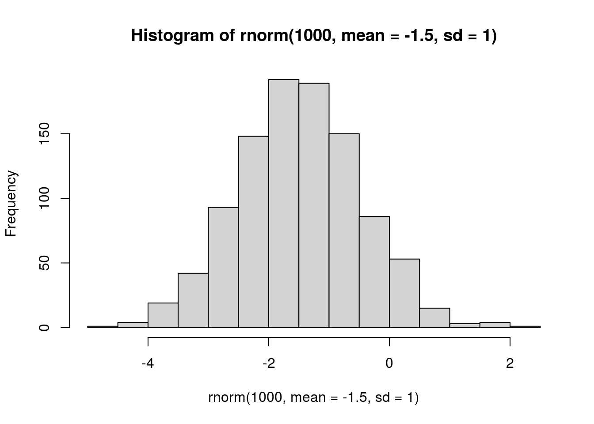
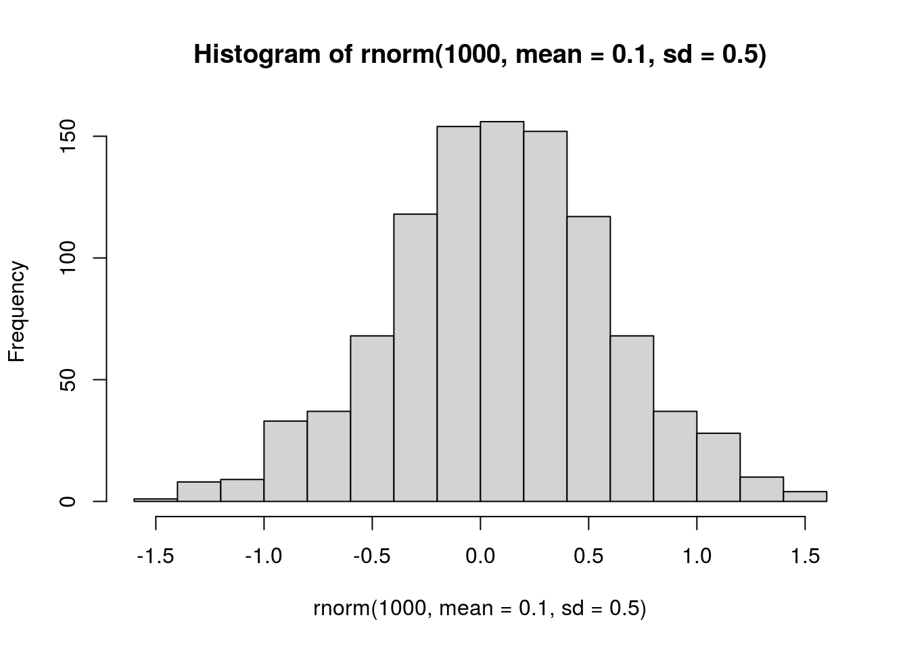
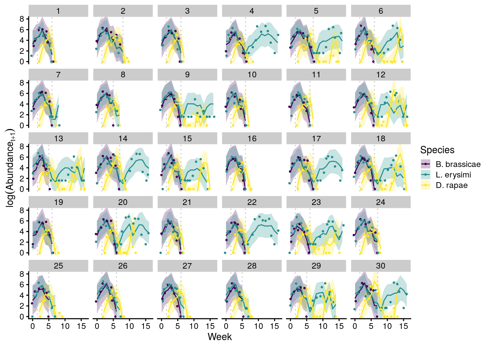

Bayesian MAR(1) models and structural stability
Matthew A. Barbour
2021-06-24
Last updated: 2021-06-24
Checks: 6 1
Knit directory: genes-to-foodweb-stability/
This reproducible R Markdown analysis was created with workflowr (version 1.6.2). The Checks tab describes the reproducibility checks that were applied when the results were created. The Past versions tab lists the development history.
The R Markdown is untracked by Git. To know which version of the R Markdown file created these results, you’ll want to first commit it to the Git repo. If you’re still working on the analysis, you can ignore this warning. When you’re finished, you can run wflow_publish to commit the R Markdown file and build the HTML.
Great job! The global environment was empty. Objects defined in the global environment can affect the analysis in your R Markdown file in unknown ways. For reproduciblity it’s best to always run the code in an empty environment.
The command set.seed(20200205) was run prior to running the code in the R Markdown file. Setting a seed ensures that any results that rely on randomness, e.g. subsampling or permutations, are reproducible.
Great job! Recording the operating system, R version, and package versions is critical for reproducibility.
Nice! There were no cached chunks for this analysis, so you can be confident that you successfully produced the results during this run.
Great job! Using relative paths to the files within your workflowr project makes it easier to run your code on other machines.
Great! You are using Git for version control. Tracking code development and connecting the code version to the results is critical for reproducibility.
The results in this page were generated with repository version 1955523. See the Past versions tab to see a history of the changes made to the R Markdown and HTML files.
Note that you need to be careful to ensure that all relevant files for the analysis have been committed to Git prior to generating the results (you can use wflow_publish or wflow_git_commit). workflowr only checks the R Markdown file, but you know if there are other scripts or data files that it depends on. Below is the status of the Git repository when the results were generated:
Ignored files:
Ignored: .Rhistory
Ignored: .Rproj.user/
Ignored: code/.Rhistory
Ignored: output/.Rapp.history
Untracked files:
Untracked: .genes-to-foodweb-stability.Rproj.swp
Untracked: analysis/foodweb-persistence.Rmd
Untracked: analysis/foodweb-transitions.Rmd
Untracked: analysis/plant-growth-no-insects-lme.Rmd
Untracked: analysis/prep-timeseries.Rmd
Untracked: analysis/structural-stability.Rmd
Untracked: code/summarize_stability_metrics.R
Untracked: data/InsectAbundanceSurvival.csv
Untracked: data/insect_abundance_data_2018-09-26_underneathleaf.csv
Untracked: figures/MAR1-parameter-plot.pdf
Untracked: figures/aop2-genos-coxadjcurve.pdf
Untracked: figures/aop2-genotypes-multistate.pdf
Untracked: figures/cage-dynamics-20C.pdf
Untracked: figures/cage-dynamics-23C.pdf
Untracked: figures/keystone-coxadjcurve.pdf
Untracked: figures/keystone-effect-model-comparison-ratio.pdf
Untracked: output/all.mar1.brm.adj.rds
Untracked: output/all.mar1.brm.unadj.ar2.lag.rds
Untracked: output/all.mar1.brm.unadj.noBRBRonLYER.rds
Untracked: output/all.mar1.brm.unadj.rds
Untracked: output/all.mar1.brm.unadj.xAOP2.rds
Untracked: output/initial.mar1.brm.adj.rds
Untracked: output/initial.mar1.brm.unadj.rds
Untracked: output/time-series-data.RData
Unstaged changes:
Modified: README.md
Deleted: analysis/about.Rmd
Deleted: analysis/community-persistence-keystone.Rmd
Deleted: analysis/critical-transitions-keystone.Rmd
Modified: analysis/index.Rmd
Deleted: analysis/plant-growth-no-insects.Rmd
Deleted: analysis/structural-stability-keystone.Rmd
Deleted: code/AOP2-LYER-Ptoid-persistence.R
Modified: code/README.md
Deleted: code/glm-ftest.R
Modified: code/plot-feasibility-domain.R
Deleted: code/prep-time-series.R
Modified: code/simulate-community-dynamics.R
Deleted: code/temperature-structural-stability-fig.R
Modified: data/README.md
Deleted: data/arabidopsis_clean_df.csv
Modified: figures/AOP2-growth-no-insects.pdf
Modified: figures/MAR1-nonequilibrium-foodchain-AOP2.pdf
Deleted: figures/MAR1-nonequilibrium-initial-temp.pdf
Modified: figures/MAR1-posterior-foodchain-AOP2.pdf
Deleted: figures/MAR1-posterior-initial-temp.pdf
Deleted: figures/initial-foodweb-structural-stability.png
Modified: figures/keystone-gene.pdf
Modified: figures/keystone-structural-stability-forkeynote.pdf
Modified: output/README.md
Deleted: output/full.mv.norm.brm.keystone.rds
Deleted: output/plant-growth-no-insects.RData
Deleted: output/reduced.1.brm.keystone.rds
Deleted: output/reduced.2.brm.keystone.rds
Deleted: output/reduced.3.brm.keystone.rds
Deleted: output/reduced.4.brm.keystone.rds
Deleted: output/reduced.5.brm.keystone.rds
Deleted: output/reduced.6.brm.keystone.rds
Deleted: output/timeseries_df.csv
Note that any generated files, e.g. HTML, png, CSS, etc., are not included in this status report because it is ok for generated content to have uncommitted changes.
These are the previous versions of the repository in which changes were made to the R Markdown (analysis/structural-stability.Rmd) and HTML (docs/structural-stability.html) files. If you’ve configured a remote Git repository (see ?wflow_git_remote), click on the hyperlinks in the table below to view the files as they were in that past version.
| File | Version | Author | Date | Message |
|---|---|---|---|---|
| Rmd | 399b240 | mabarbour | 2020-10-11 | remove old versions of analysis |
| Rmd | c1aaf8e | mabarbour | 2020-10-11 | remove old versions of analysis |
| html | 51fc18b | mabarbour | 2020-06-23 | Build site. |
| Rmd | 86116c8 | mabarbour | 2020-06-23 | bioRxiv version of code and data. |
| html | 86116c8 | mabarbour | 2020-06-23 | bioRxiv version of code and data. |
General priors
Intrinsic growth rates
# from Jahan et al. 2014, Journal of Insect Science
# Table 4 lambda (finite rate of increase, discrete time analogue of intrinsic growth rate)
# calculated on a per-day basis and not logged. This is why I multiply by 7 and then take the natural logarithm
Jahan.r.BRBR <- log(c(1.42, 1.36, 1.32, 1.35, 1.40, 1.33, 1.38, 1.37) * 7)
mean(Jahan.r.BRBR) # 2.26[1] 2.257713sd(Jahan.r.BRBR) # 0.02[1] 0.02468356# visualize prior
hist(rnorm(1000, mean(Jahan.r.BRBR), sd = 1))
| Version | Author | Date |
|---|---|---|
| 86116c8 | mabarbour | 2020-06-23 |
prior.r.BRBR <- "normal(2.26, 1)"
# from Taghizadeh 2019, J. Agr. Sci. Tech.
# Table 2 lambda (finite rate of increase, discrete time analogue of intrinsic growth rate)
# calculated on a per-day basis and not logged. This is why I multiply by 7 and then take the natural logarithm
Tag.r.LYER <- log(c(1.35, 1.30, 1.26, 1.23) * 7)
mean(Tag.r.LYER) # 2.20[1] 2.196059sd(Tag.r.LYER) # 0.04[1] 0.04028153# visualize prior
hist(rnorm(1000, mean(Tag.r.LYER), sd = 1))
| Version | Author | Date |
|---|---|---|
| 86116c8 | mabarbour | 2020-06-23 |
prior.r.LYER <- "normal(2.20, 1)"
# random effects prior based on variance among cultivars
# I'm just going to use this for all of them, including parasitoids
mean.r.sd <- mean(c(sd(Jahan.r.BRBR), sd(Tag.r.LYER)))
# visualize prior
hist(rnorm(1000, mean = mean.r.sd, sd = 0.5))
| Version | Author | Date |
|---|---|---|
| 86116c8 | mabarbour | 2020-06-23 |
# not changing for now
prior.random.effects <- "normal(0.03, 0.5)" # mean of BRBR and LYER
# I don't have a great sense for the growth rate of the parasitoid, other than that it should be negative
# this seems like a reasonable starting point
# visualize prior
hist(rnorm(1000, mean = -1.5, sd = 1))
| Version | Author | Date |
|---|---|---|
| 86116c8 | mabarbour | 2020-06-23 |
prior.r.Ptoid <- "normal(-1.5, 1)"Intra- and interspecific interactions
I assume they are weak, i.e. much less than \(|1|\). I also assume that all species exhibit intraspecific competition, aphids have negative interspecific effects with each other, but positive interspecific effects on the parasitoid. I also assume parasitoids have negative interspecific effects on the aphids.
## intraspecific, 1 = no density dependence. I would prefer to specify an offset first, so that 0 = no density dependence, like the other coefs, but I can't use the offset if I incorporate measurement error :-(
# visualize prior
hist(rnorm(1000, mean = 0.9, sd = 0.5))
| Version | Author | Date |
|---|---|---|
| 86116c8 | mabarbour | 2020-06-23 |
prior.intra.BRBR <- "normal(0.9, 0.5)"
prior.intra.LYER <- "normal(0.9, 0.5)"
prior.intra.Ptoid <- "normal(0.9, 0.5)"
## negative interspecific, 0 = no interaction
# visualize prior
hist(rnorm(1000, mean = -0.1, sd = 0.5))
| Version | Author | Date |
|---|---|---|
| 86116c8 | mabarbour | 2020-06-23 |
# most of these values are less than 1, which
# is indicative of saturating effects
prior.LYERonBRBR <- "normal(-0.1, 0.5)"
prior.PtoidonBRBR <- "normal(-0.1, 0.5)"
prior.BRBRonLYER <- "normal(-0.1, 0.5)"
prior.PtoidonLYER <- "normal(-0.1, 0.5)"
## positive interspecific
# visualize prior
hist(rnorm(1000, mean = 0.1, sd = 0.5))
| Version | Author | Date |
|---|---|---|
| 86116c8 | mabarbour | 2020-06-23 |
# most of these values are less than 1, which
# is indicative of saturating effects
prior.BRBRonPtoid <- "normal(0.1, 0.5)"
prior.LYERonPtoid <- "normal(0.1, 0.5)"AOP2 effects
It was unclear to me a priori exactly how allelic differences at AOP2 would affect species’ growth rates or intra- and interspecific interactions. Therefore, I assumed these effects on specific rates could be positive or negative, but would likely be between -1 and 1 (i.e., not ridiculously large).
prior.AOP2 <- "normal(0, 0.5)"Temperature effects
As with AOP2 it was unclear to me a priori how warming would affect species’ growth rates or intra- and interspecific interactions; therefore, I used the same prior as for AOP2.
prior.temp <- "normal(0, 0.5)"Biomass effects
For both aphids, I thought that increasing biomass would increase their intrinsic growth rates, but only weakly, because I didn’t expect biomass to be limiting.
# visualize prior
hist(rnorm(1000, mean = 0.1, sd = 0.5))
| Version | Author | Date |
|---|---|---|
| 86116c8 | mabarbour | 2020-06-23 |
prior.AphidBiomass <- "normal(0.1, 0.5)"For the parasitoid, it was unclear to me whether increasing biomass would have positive or negative effects. I could imagine both, as increasing biomass may increase the search effort of parasitoids, resulting in a negative effect on their growth rate. Alternatively, more biomass may increase the quality of aphids, which could increase the parasitoid’s growth rate. Therefore, I specified a normal prior with mean = 0 and SD = 0.5, so that most of the distribution lied between -1 and 1 (i.e. saturating negative or positive effects).
# visualize prior
hist(rnorm(1000, mean = 0, sd = 0.5))
| Version | Author | Date |
|---|---|---|
| 86116c8 | mabarbour | 2020-06-23 |
prior.PtoidBiomass <- "normal(0, 0.5)"Model including all species
Formula
This follows equation 1 in the Supplementary Material.
# BRBR
all.BRBR.bf <- bf(log(BRBR_t1) ~ 0 + Intercept + (me(logBRBR_t, se_logBRBRt) + me(logLYER_t, se_logLYERt) + me(logPtoid_t, se_logPtoidt)) + aop2_genotypes + AOP2_genotypes + temp + log(Biomass_g_t1) + (1|p|Cage))
# LYER
all.LYER.bf <- bf(log(LYER_t1) ~ 0 + Intercept + (me(logLYER_t, se_logLYERt) + me(logBRBR_t, se_logBRBRt) + me(logPtoid_t, se_logPtoidt)) + aop2_genotypes + AOP2_genotypes + temp + log(Biomass_g_t1) + (1|p|Cage))
# Ptoid
all.Ptoid.bf <- bf(log(Ptoid_t1) ~ 0 + Intercept + me(logPtoid_t, se_logPtoidt) + me(logBRBR_t, se_logBRBRt) + me(logLYER_t, se_logLYERt) + aop2_genotypes + AOP2_genotypes + temp + log(Biomass_g_t1) + (1|p|Cage))Priors summarized in Table S3
all.mv.priors <- c(
# aop2 and AOP2 effects
set_prior(prior.AOP2, class = "b", coef = "aop2_genotypes", resp = "logBRBRt1"),
set_prior(prior.AOP2, class = "b", coef = "AOP2_genotypes", resp = "logBRBRt1"),
set_prior(prior.AOP2, class = "b", coef = "aop2_genotypes", resp = "logLYERt1"),
set_prior(prior.AOP2, class = "b", coef = "AOP2_genotypes", resp = "logLYERt1"),
set_prior(prior.AOP2, class = "b", coef = "aop2_genotypes", resp = "logPtoidt1"),
set_prior(prior.AOP2, class = "b", coef = "AOP2_genotypes", resp = "logPtoidt1"),
# biomass effects
set_prior(prior.AphidBiomass, class = "b", coef = "logBiomass_g_t1", resp = "logBRBRt1"),
set_prior(prior.AphidBiomass, class = "b", coef = "logBiomass_g_t1", resp = "logLYERt1"),
set_prior(prior.PtoidBiomass, class = "b", coef = "logBiomass_g_t1", resp = "logPtoidt1"),
# baseline growth rates
set_prior(prior.r.BRBR, class = "b", coef = "Intercept", resp = "logBRBRt1"),
set_prior(prior.r.LYER, class = "b", coef = "Intercept", resp = "logLYERt1"),
set_prior(prior.r.Ptoid, class = "b", coef = "Intercept", resp = "logPtoidt1"),
# intraspecific effects
set_prior(prior.intra.BRBR, class = "b", coef = "melogBRBR_tse_logBRBRt", resp = "logBRBRt1"),
set_prior(prior.intra.LYER, class = "b", coef = "melogLYER_tse_logLYERt", resp = "logLYERt1"),
set_prior(prior.intra.Ptoid, class = "b", coef = "melogPtoid_tse_logPtoidt", resp = "logPtoidt1"),
# negative interspecific effects
set_prior(prior.LYERonBRBR, class = "b", coef = "melogLYER_tse_logLYERt", resp = "logBRBRt1"),
set_prior(prior.BRBRonLYER, class = "b", coef = "melogBRBR_tse_logBRBRt", resp = "logLYERt1"),
set_prior(prior.PtoidonBRBR, class = "b", coef = "melogPtoid_tse_logPtoidt", resp = "logBRBRt1"),
set_prior(prior.PtoidonLYER, class = "b", coef = "melogPtoid_tse_logPtoidt", resp = "logLYERt1"),
# positive interspecific effects
set_prior(prior.BRBRonPtoid, class = "b", coef = "melogBRBR_tse_logBRBRt", resp = "logPtoidt1"),
set_prior(prior.LYERonPtoid, class = "b", coef = "melogLYER_tse_logLYERt", resp = "logPtoidt1"),
# temp effects
set_prior(prior.temp, class = "b", coef = "temp", resp = "logBRBRt1"),
set_prior(prior.temp, class = "b", coef = "temp", resp = "logLYERt1"),
set_prior(prior.temp, class = "b", coef = "temp", resp = "logPtoidt1"),
# random effects
set_prior(prior.random.effects, class = "sd", resp = "logBRBRt1"),
set_prior(prior.random.effects, class = "sd", resp = "logLYERt1"),
set_prior(prior.random.effects, class = "sd", resp = "logPtoidt1"))Fit Model
all.mar1.brm.unadj <- brm(
data = full_df,
formula = mvbf(all.BRBR.bf, all.LYER.bf, all.Ptoid.bf) + set_rescor(TRUE),
iter = 5000,
save_pars = save_pars(latent = TRUE, all = TRUE),
prior = all.mv.priors,
file = "output/all.mar1.brm.unadj.rds")
all.mar1.brm.unadj Family: MV(gaussian, gaussian, gaussian)
Links: mu = identity; sigma = identity
mu = identity; sigma = identity
mu = identity; sigma = identity
Formula: log(BRBR_t1) ~ 0 + Intercept + (me(logBRBR_t, se_logBRBRt) + me(logLYER_t, se_logLYERt) + me(logPtoid_t, se_logPtoidt)) + aop2_genotypes + AOP2_genotypes + temp + log(Biomass_g_t1) + (1 | p | Cage)
log(LYER_t1) ~ 0 + Intercept + (me(logLYER_t, se_logLYERt) + me(logBRBR_t, se_logBRBRt) + me(logPtoid_t, se_logPtoidt)) + aop2_genotypes + AOP2_genotypes + temp + log(Biomass_g_t1) + (1 | p | Cage)
log(Ptoid_t1) ~ 0 + Intercept + me(logPtoid_t, se_logPtoidt) + me(logBRBR_t, se_logBRBRt) + me(logLYER_t, se_logLYERt) + aop2_genotypes + AOP2_genotypes + temp + log(Biomass_g_t1) + (1 | p | Cage)
Data: full_df (Number of observations: 264)
Samples: 4 chains, each with iter = 5000; warmup = 2500; thin = 1;
total post-warmup samples = 10000
Group-Level Effects:
~Cage (Number of levels: 60)
Estimate Est.Error l-95% CI
sd(logBRBRt1_Intercept) 0.18 0.12 0.01
sd(logLYERt1_Intercept) 0.17 0.10 0.01
sd(logPtoidt1_Intercept) 0.07 0.06 0.00
cor(logBRBRt1_Intercept,logLYERt1_Intercept) -0.10 0.48 -0.89
cor(logBRBRt1_Intercept,logPtoidt1_Intercept) 0.08 0.50 -0.85
cor(logLYERt1_Intercept,logPtoidt1_Intercept) 0.01 0.50 -0.88
u-95% CI Rhat Bulk_ESS Tail_ESS
sd(logBRBRt1_Intercept) 0.46 1.00 2549 4640
sd(logLYERt1_Intercept) 0.39 1.00 2321 4183
sd(logPtoidt1_Intercept) 0.21 1.00 6017 4961
cor(logBRBRt1_Intercept,logLYERt1_Intercept) 0.81 1.00 4528 6645
cor(logBRBRt1_Intercept,logPtoidt1_Intercept) 0.91 1.00 12875 7451
cor(logLYERt1_Intercept,logPtoidt1_Intercept) 0.88 1.00 11684 8543
Population-Level Effects:
Estimate Est.Error l-95% CI u-95% CI Rhat
logBRBRt1_Intercept 2.15 0.59 0.99 3.31 1.00
logBRBRt1_aop2_genotypes 0.03 0.13 -0.22 0.29 1.00
logBRBRt1_AOP2_genotypes 0.00 0.12 -0.23 0.23 1.00
logBRBRt1_temp -0.45 0.08 -0.61 -0.31 1.00
logBRBRt1_logBiomass_g_t1 0.02 0.25 -0.46 0.50 1.00
logLYERt1_Intercept 3.08 0.51 2.09 4.08 1.00
logLYERt1_aop2_genotypes 0.19 0.11 -0.01 0.40 1.00
logLYERt1_AOP2_genotypes -0.08 0.10 -0.27 0.11 1.00
logLYERt1_temp 0.00 0.06 -0.11 0.13 1.00
logLYERt1_logBiomass_g_t1 0.05 0.21 -0.35 0.45 1.00
logPtoidt1_Intercept -1.92 0.55 -2.98 -0.84 1.00
logPtoidt1_aop2_genotypes 0.22 0.11 0.01 0.44 1.00
logPtoidt1_AOP2_genotypes -0.11 0.10 -0.30 0.09 1.00
logPtoidt1_temp -0.16 0.06 -0.27 -0.04 1.00
logPtoidt1_logBiomass_g_t1 -1.12 0.22 -1.55 -0.68 1.00
logBRBRt1_melogBRBR_tse_logBRBRt 0.72 0.09 0.54 0.91 1.00
logBRBRt1_melogLYER_tse_logLYERt 0.04 0.12 -0.19 0.27 1.00
logBRBRt1_melogPtoid_tse_logPtoidt -0.73 0.06 -0.86 -0.61 1.00
logLYERt1_melogLYER_tse_logLYERt 0.34 0.10 0.14 0.54 1.00
logLYERt1_melogBRBR_tse_logBRBRt 0.24 0.08 0.09 0.40 1.00
logLYERt1_melogPtoid_tse_logPtoidt -0.68 0.05 -0.78 -0.59 1.00
logPtoidt1_melogPtoid_tse_logPtoidt 0.99 0.05 0.88 1.09 1.00
logPtoidt1_melogBRBR_tse_logBRBRt 0.07 0.07 -0.08 0.21 1.00
logPtoidt1_melogLYER_tse_logLYERt 0.45 0.10 0.26 0.64 1.00
Bulk_ESS Tail_ESS
logBRBRt1_Intercept 10107 7405
logBRBRt1_aop2_genotypes 13547 8138
logBRBRt1_AOP2_genotypes 13124 8587
logBRBRt1_temp 6602 7763
logBRBRt1_logBiomass_g_t1 11069 8333
logLYERt1_Intercept 9646 7397
logLYERt1_aop2_genotypes 12154 7630
logLYERt1_AOP2_genotypes 12191 7880
logLYERt1_temp 7232 6676
logLYERt1_logBiomass_g_t1 11013 8015
logPtoidt1_Intercept 9133 6787
logPtoidt1_aop2_genotypes 13612 7930
logPtoidt1_AOP2_genotypes 13267 8190
logPtoidt1_temp 10937 8428
logPtoidt1_logBiomass_g_t1 10685 8894
logBRBRt1_melogBRBR_tse_logBRBRt 6296 6948
logBRBRt1_melogLYER_tse_logLYERt 6039 6329
logBRBRt1_melogPtoid_tse_logPtoidt 11113 8659
logLYERt1_melogLYER_tse_logLYERt 5820 7142
logLYERt1_melogBRBR_tse_logBRBRt 5761 6059
logLYERt1_melogPtoid_tse_logPtoidt 11830 7963
logPtoidt1_melogPtoid_tse_logPtoidt 13008 8341
logPtoidt1_melogBRBR_tse_logBRBRt 9619 7257
logPtoidt1_melogLYER_tse_logLYERt 9713 7690
Family Specific Parameters:
Estimate Est.Error l-95% CI u-95% CI Rhat Bulk_ESS Tail_ESS
sigma_logBRBRt1 1.23 0.06 1.13 1.35 1.00 12496 7477
sigma_logLYERt1 0.95 0.05 0.87 1.05 1.00 10245 7704
sigma_logPtoidt1 1.02 0.05 0.94 1.12 1.00 15968 8374
Residual Correlations:
Estimate Est.Error l-95% CI u-95% CI Rhat Bulk_ESS
rescor(logBRBRt1,logLYERt1) 0.48 0.05 0.38 0.58 1.00 9085
rescor(logBRBRt1,logPtoidt1) -0.22 0.06 -0.34 -0.10 1.00 14310
rescor(logLYERt1,logPtoidt1) -0.06 0.06 -0.18 0.07 1.00 13783
Tail_ESS
rescor(logBRBRt1,logLYERt1) 8516
rescor(logBRBRt1,logPtoidt1) 8007
rescor(logLYERt1,logPtoidt1) 7635
Samples were drawn using sampling(NUTS). For each parameter, Bulk_ESS
and Tail_ESS are effective sample size measures, and Rhat is the potential
scale reduction factor on split chains (at convergence, Rhat = 1).Carrying capacity check
# BRBR carrying capacity
fixef(all.mar1.brm.unadj)["logBRBRt1_Intercept","Estimate"] / (1 - fixef(all.mar1.brm.unadj)["logBRBRt1_melogBRBR_tse_logBRBRt","Estimate"]) [1] 7.81221max(log(full_df$BRBR_t1)) # max observed in experiment[1] 6.727432# LYER carrying capacity
fixef(all.mar1.brm.unadj)["logLYERt1_Intercept","Estimate"] / (1 - fixef(all.mar1.brm.unadj)["logLYERt1_melogLYER_tse_logLYERt","Estimate"]) # too low[1] 4.675535Reproduce Fig. S5
# intrinsic growth rates
r_plots <- mcmc_intervals_data(all.mar1.brm.unadj, pars = c("b_logBRBRt1_Intercept","b_logLYERt1_Intercept","b_logPtoidt1_Intercept"), prob = 0.66, prob_outer = 0.95) %>%
mutate(parameter = factor(parameter, levels = c("b_logPtoidt1_Intercept","b_logLYERt1_Intercept","b_logBRBRt1_Intercept"))) %>%
ggplot(aes(x = parameter, y = m)) +
geom_hline(yintercept = 0, linetype = "dotted") +
geom_linerange(aes(ymin = ll, ymax = hh), size = 0.5) +
geom_linerange(aes(ymin = l, ymax = h), size = 1) +
geom_point(size = 1.5) +
ylab(expression(paste("Intrinsic growth rates (", italic("r"),")"))) +
scale_x_discrete(name = "", labels = c("D","L","B")) +
coord_flip() +
theme_cowplot(font_size = 8)
# AOP2 effect on intrinsic growth rates
delta_r_plots <- mcmc_intervals_data(all.mar1.brm.unadj, regex_pars = c("_aop2_genotypes","_AOP2_genotypes")) %>%
separate(col = "parameter", into = c("b","species","allele","genotypes")) %>%
mutate(species = factor(species, levels = c("logPtoidt1","logLYERt1","logBRBRt1"))) %>%
ggplot(aes(x = species, y = m, color = allele)) +
geom_hline(yintercept = 0, linetype = "dotted", color = "grey") +
geom_point(position = position_dodge(width = 0.4), size = 1.5) +
geom_linerange(aes(ymin = l, ymax = h), size = 1, position = position_dodge(width = 0.4)) +
geom_linerange(aes(ymin = ll, ymax = hh), size = 0.5, position = position_dodge(width = 0.4)) +
scale_color_grey(name = "", labels = c("AOP2\u2013", "AOP2+")) + # viridis_d
ylab(expression(paste("Allele effect (", Delta*"r", italic("G"),")"))) +
scale_x_discrete(name = "", labels = c("D","L","B")) + #c(expression(italic("D. rapae")), expression(italic("L. erysimi")), expression(italic("B. brassicae")))) +
theme_cowplot(font_size = 8) +
coord_flip()
# Interaction matrix
b_data <- mcmc_intervals_data(
all.mar1.brm.unadj,
pars = c("bsp_logBRBRt1_melogBRBR_tse_logBRBRt",
"bsp_logBRBRt1_melogLYER_tse_logLYERt",
"bsp_logBRBRt1_melogPtoid_tse_logPtoidt",
"bsp_logLYERt1_melogBRBR_tse_logBRBRt",
"bsp_logLYERt1_melogLYER_tse_logLYERt",
"bsp_logLYERt1_melogPtoid_tse_logPtoidt",
"bsp_logPtoidt1_melogBRBR_tse_logBRBRt",
"bsp_logPtoidt1_melogLYER_tse_logLYERt",
"bsp_logPtoidt1_melogPtoid_tse_logPtoidt"),
prob = 0.66, prob_outer = 0.95) %>%
mutate(parameter = factor(parameter,
labels = c("B \u2b62 B","L \u2b62 B","D \u2b62 B","B \u2b62 L","L \u2b62 L","D \u2b62 L","B \u2b62 D","L \u2b62 D","D \u2b62 D")),
baseline = c(1,0,0,
0,1,0,
0,0,1))
b_plots <- ggplot(b_data, aes(x = parameter, y = m, color = factor(baseline))) +
geom_hline(aes(yintercept = baseline, color = factor(baseline)), linetype = "dotted") +
geom_linerange(aes(ymin = ll, ymax = hh), size = 0.5) +
geom_linerange(aes(ymin = l, ymax = h), size = 1) +
geom_point(size = 1.5) +
ylab(expression(paste("Interactions (", italic("b"),")"))) +
scale_x_discrete(name = "", limits = rev) +
theme_cowplot(font_size = 8) +
coord_flip() +
scale_color_grey(name = "", labels = c("Inter","Intra")) # viridis_d
# biomass effect on intrinsic growth rates
p_plots <- mcmc_intervals_data(all.mar1.brm.unadj, regex_pars = "Biomass_g_t1$", prob = 0.66, prob_outer = 0.95) %>%
mutate(parameter = factor(parameter, levels = c("b_logPtoidt1_logBiomass_g_t1","b_logLYERt1_logBiomass_g_t1","b_logBRBRt1_logBiomass_g_t1"))) %>%
ggplot(aes(x = parameter, y = m)) +
geom_hline(yintercept = 0, linetype = "dotted") +
geom_linerange(aes(ymin = ll, ymax = hh), size = 0.5) +
geom_linerange(aes(ymin = l, ymax = h), size = 1) +
geom_point(size = 1.5) +
ylab(expression(paste("Plant biomass effect (", italic("p"),")"))) +
scale_x_discrete(name = "", labels = c("D","L","B")) +
coord_flip() +
theme_cowplot(font_size = 8)
# temperature effect on intrinsic growth rates
t_plots <- mcmc_intervals_data(all.mar1.brm.unadj, regex_pars = "temp$", prob = 0.66, prob_outer = 0.95) %>%
mutate(parameter = factor(parameter, levels = c("b_logPtoidt1_temp","b_logLYERt1_temp","b_logBRBRt1_temp"))) %>%
ggplot(aes(x = parameter, y = m)) +
geom_hline(yintercept = 0, linetype = "dotted") +
geom_linerange(aes(ymin = ll, ymax = hh), size = 0.5) +
geom_linerange(aes(ymin = l, ymax = h), size = 1) +
geom_point(size = 1.5) +
ylab(expression(paste("Temperature effect (", Delta*"r", italic("T"),")"))) +
scale_x_discrete(name = "", labels = c("D","L","B")) +
coord_flip() +
theme_cowplot(font_size = 8)
# combine plots
MAR1_parameter_plot <- plot_grid(r_plots, delta_r_plots, t_plots, b_plots, p_plots, nrow = 3, ncol = 2, align = 'v', axis = 'l', rel_widths = c(0.8,1))
x11(); MAR1_parameter_plot
#save_plot(filename = "figures/MAR1-parameter-plot.pdf", plot = MAR1_parameter_plot, device=cairo_pdf, base_asp = 1.1)Structural stability
stability_all.mar1.brm.unadj <- aop2_vs_AOP2_posterior_samples_unadj(all.mar1.brm.unadj, n.geno = 2, temp.value = 0, logbiomass.value = 0)
stability_all.mar1.brm.unadj$aop2_SS_LP_BayesP # clearly stabilizing[1] 0.9966stability_all.mar1.brm.unadj$aop2_SS_LP_effect[1] 13.0206stability_all.mar1.brm.unadj$aop2_SS_LP_95CI 2.5% 97.5%
3.873221 23.478849 Aphid and parasitoid intrinsic growth rates
stability_all.mar1.brm.unadj$aop2_r_LYER_effect[1] 0.5389944stability_all.mar1.brm.unadj$aop2_r_LYER_95CI 2.5% 97.5%
-0.04038828 1.12561843 stability_all.mar1.brm.unadj$aop2_r_Ptoid_effect[1] 0.6588181stability_all.mar1.brm.unadj$aop2_r_Ptoid_95CI 2.5% 97.5%
0.0859789 1.2534024 stability_all.mar1.brm.unadj_n.geno1 <- aop2_vs_AOP2_posterior_samples_unadj(all.mar1.brm.unadj, n.geno = 1, temp.value = 0, logbiomass.value = 0)
stability_all.mar1.brm.unadj_n.geno1$aop2_r_LYER_effect[1] 0.2694972stability_all.mar1.brm.unadj_n.geno1$aop2_r_LYER_95CI 2.5% 97.5%
-0.02019414 0.56280922 Reproduce Fig. S6 and S7
# merge full data set and that with remaining
complete_df <- bind_rows(aphids_only_df, full_df, LP_df, L_df, P_df) %>%
arrange(Cage, Week)
predict_data <- complete_df
# get predictions
BRBR_predict_df <- predict_data %>% filter(BRBR_Survival == 1) %>% mutate(Abundance = BRBR_t1)
predict_BRBRt1 <- bind_cols(BRBR_predict_df, data.frame(predict(all.mar1.brm.unadj, newdata = BRBR_predict_df, resp = "logBRBRt1"))) %>% mutate(Species = "BRBR")
LYER_predict_df <- predict_data %>% filter(LYER_Survival == 1) %>% mutate(Abundance = LYER_t1)
predict_LYERt1 <- bind_cols(LYER_predict_df, data.frame(predict(all.mar1.brm.unadj, newdata = LYER_predict_df, resp = "logLYERt1"))) %>% mutate(Species = "LYER")
Ptoid_predict_df <- predict_data %>% filter(Mummy_Ptoids_Survival == 1) %>% mutate(Abundance = Ptoid_t1)
predict_Ptoidt1 <- bind_cols(Ptoid_predict_df, data.frame(predict(all.mar1.brm.unadj, newdata = Ptoid_predict_df, resp = "logPtoidt1"))) %>% mutate(Species = "Ptoid")
# combine data
predict_all <- bind_rows(predict_BRBRt1, predict_LYERt1, predict_Ptoidt1) %>%
mutate(Species = factor(Species, levels = c("BRBR","LYER","Ptoid"), labels = c("B. brassicae", "L. erysimi", "D. rapae")))
# get week when first species went extinct (always BRBR at least)
full_df_last_week <- full_df %>%
group_by(Cage) %>%
summarise(last_week = last(Week))
# would be nice to color code facets by number of aop2 genotypes e.g.
# something like? https://stackoverflow.com/questions/19440069/ggplot2-facet-wrap-strip-color-based-on-variable-in-data-set
# 20 C cages
plot_cage_dynamics20C <- filter(predict_all, Cage %in% 1:30) %>%
left_join(., full_df_last_week) %>%
ggplot(aes(x = Week, y = log(Abundance), group = interaction(Cage, Species))) +
geom_ribbon(aes(ymin = Q2.5, ymax = Q97.5, fill = Species), alpha = 0.25) +
geom_line(aes(y = Estimate, color = Species)) +
geom_jitter(aes(color = Species), size = 0.5) +
facet_wrap(~Cage, nrow = 5, ncol = 6) +
scale_color_viridis_d() +
scale_fill_viridis_d() +
theme_cowplot(font_size = 10) +
geom_vline(xintercept = 1.5, linetype = "dotted", color = "grey") +
geom_vline(aes(xintercept = last_week), linetype = "dotted", color = "grey") +
coord_cartesian(ylim = c(0,8)) +
ylab(expression(log(Abundance[t+1])))
x11(); plot_cage_dynamics20C
#ggsave(plot = plot_cage_dynamics20C, filename = "figures/cage-dynamics-20C.pdf", height = 5, width = 6, device=cairo_pdf)
# 23 C cages
plot_cage_dynamics23C <- filter(predict_all, Cage %in% 31:60) %>%
left_join(., full_df_last_week) %>%
ggplot(aes(x = Week, y = log(Abundance), group = interaction(Cage, Species))) +
geom_ribbon(aes(ymin = Q2.5, ymax = Q97.5, fill = Species), alpha = 0.25) +
geom_line(aes(y = Estimate, color = Species)) +
geom_point(aes(color = Species), size = 0.5) +
facet_wrap(~Cage, nrow = 5, ncol = 6) +
scale_color_viridis_d() +
scale_fill_viridis_d() +
theme_cowplot(font_size = 10) +
geom_vline(xintercept = 1.5, linetype = "dotted", color = "grey") +
geom_vline(aes(xintercept = last_week), linetype = "dotted", color = "grey") +
coord_cartesian(ylim = c(0,8)) +
ylab(expression(log(Abundance[t+1])))
x11(); plot_cage_dynamics23C
#ggsave(plot = plot_cage_dynamics23C, filename = "figures/cage-dynamics-23C.pdf", height = 5, width = 6, device=cairo_pdf)MAR(1) Bayesian R2 in Table S4
bayes_R2(all.mar1.brm.unadj, newdata = BRBR_predict_df, resp = "logBRBRt1") Estimate Est.Error Q2.5 Q97.5
R2logBRBRt1 0.6458531 0.02399933 0.5962244 0.6880834bayes_R2(all.mar1.brm.unadj, newdata = LYER_predict_df, resp = "logLYERt1") Estimate Est.Error Q2.5 Q97.5
R2logLYERt1 0.4869181 0.03248254 0.4240039 0.5503659bayes_R2(all.mar1.brm.unadj, newdata = Ptoid_predict_df, resp = "logPtoidt1") Estimate Est.Error Q2.5 Q97.5
R2logPtoidt1 0.6289082 0.01183945 0.6005009 0.6462458Reproduce core of Fig. 4
Plot the effect of AOP2 gene on structural stability of three-species food chain.
median_all.mar1.brm.unadj <- aop2_vs_AOP2_median_effects_unadj(all.mar1.brm.unadj, n.geno = 2, temp.value = 0, logbiomass.value = 0)
# get raw data for manually making plot
get_FD.2sp <- FeasibilityDomain2sp(A = list(median_all.mar1.brm.unadj$aop2.mat[2:3,2:3],
median_all.mar1.brm.unadj$AOP2.mat[2:3,2:3]),
r = list(median_all.mar1.brm.unadj$aop2.IGR[2:3],
median_all.mar1.brm.unadj$AOP2.IGR[2:3]),
labels = c("aop2", "AOP2"),
normalize = TRUE) %>%
rename(aop2 = A_ID)
# Draw polygon for feasibility domain
# from: https://stackoverflow.com/questions/12794596/how-fill-part-of-a-circle-using-ggplot2
# define the circle; add a point at the center if the 'pie slice' if the shape is to be filled
circleFun <- function(center=c(0,0), diameter=1, npoints=100, start=0, end=2, filled=TRUE){
tt <- seq(start*pi, end*pi, length.out=npoints)
df <- data.frame(
x = center[1] + diameter / 2 * cos(tt),
y = center[2] + diameter / 2 * sin(tt)
)
if(filled==TRUE) { #add a point at the center so the whole 'pie slice' is filled
df <- rbind(df, center)
}
return(df)
}
## plot figure 4
# alpha_level <- 0.05 # very low so use better looking arrows with keynote
plot_fig_4 <- ggplot(filter(get_FD.2sp, Type == "r"), aes(x = Sp_1, y = Sp_2)) +
# draw intrinsic growth rate vectors
geom_segment(aes(x = 0, y = 0, xend = Sp_1, yend = Sp_2, linetype = aop2), # alpha for manuscript
arrow = arrow(type = 'open', length = unit(0.1,"cm"))) +
# draw critical boundary (remove for final plot after adjusting geom_polygon)
# geom_segment(data = filter(get_FD.2sp, Type == "A")[c(1,3),], # just need one lower bound
# aes(x = 0, y = 0, xend = Sp_1, yend = Sp_2, alpha = aop2),
# linetype = "solid",
# size = 0.5) +
xlab("Aphid growth rate (normalized)") +
ylab("Parasitoid growth rate (normalized)") +
# illustrate circular nature of feasibility domain
coord_cartesian(xlim = c(0,1), ylim = c(-0.9,0), expand = F) +
# scale_alpha_manual(values = c(alpha_level, alpha_level), labels = c("AOP2\u2013","AOP2+"), name = "") + # used for manuscript plot to provide better looking arrows with keynote
scale_linetype_manual(values = c("solid", "dashed"), labels = c("AOP2\u2013","AOP2+"), name = "") +
# adjusted until critical boundary was correct, then removed critical boundary for final plot
geom_polygon(data=circleFun(c(0,0), diameter=2, start=0, end=-0.192, npoints=100, filled=TRUE),
aes(x,y), alpha = 0.1, inherit.aes = F) +
theme_cowplot(font_size = 18, line_size = 1)
x11(); plot_fig_4
# changes for final version
# alpha = aop2 in geom_segment(aes())
# uncomment scale_alpha_manual
# comment out scale_linetype_manual
# remove line for critical boundary
# alpha version saved for keynote # ggsave(plot = plot_fig_4, filename = "figures/keystone-structural-stability-forkeynote.pdf", width = 8, height = 8, units = "in")I then used Keynote to manually add images and text to create the final version presented in Figure 4 of the main text.
Reproduce Fig. S8
# subsample 1/8 of the posterior to make it easier to visualize
rsamp <- sample(1:10000, size = 1000)
# plot
plot_MAR1_posterior_foodchain_AOP2 <- stability_all.mar1.brm.unadj$all.aop2_vs_AOP2_stability.df %>%
#filter(r_Ptoid < 0) %>%
filter(posterior_sample %in% rsamp) %>%
mutate(n.allele = as.numeric(as.factor(aop2_vs_AOP2))) %>%
ggplot(., aes(x = n.allele, y = FeasibilityBoundaryLYER.Ptoid)) +
geom_line(aes(group = posterior_sample), alpha = 0.1) +
stat_summary(fun.y = mean, geom = "line", color = "firebrick1", size = 1) +
stat_summary(fun.y = mean, geom = "point", color = "firebrick1", size = 1.5) +
theme_minimal_hgrid() +
scale_x_continuous(name = "Allele", breaks = c(1,2), labels = c("AOP2+","AOP2\u2013"), expand = c(0.1,0.1)) +
ylab("Normalized angle from critical boundary")
#ggsave(filename = "figures/MAR1-posterior-foodchain-AOP2.pdf", width = 6, height = 5, device=cairo_pdf)Reproduce Fig. S9
The above plot illustrates the effect of AOP2 on the structural stability of the equilibrium abundances of species. I can explore whether our results hold in a non-equilibrium scenario that better characterizes our observational data.
To do this, I look at the the effect of AOP2 across a range of initial conditions for the abundances of LYER and Ptoid. I get this data by simulating community dynamics with the observed effects of AOP2 across a range of initial conditions. I restricted our simulation to 10 time steps, as BRBR went extinct commonly at week 7 (experiment was 17 weeks long). I also set an extinction threshold of 2 individuals.
LP_duration <- 10
LP_threshold <- log(2) # set threshold of two individuals in the populations
res <- 0.1
LP_test_df <- expand.grid(LYER = seq(1, 6, by = res), Ptoid = seq(1, 6, by = res))
## simulate population dynamics and determine which species goes extinct
# aop2
FE_LP_aop2 <- list()
for(i in 1:length(LP_test_df$LYER)){
FE_LP_aop2[[i]] <- first_extinction_2sp(Initial.States = c(LYER = LP_test_df[i,"LYER"], Ptoid = LP_test_df[i,"Ptoid"]),
Interaction.Matrix = median_all.mar1.brm.unadj$aop2.mat[2:3,2:3] + diag(2),
IGR.Vector = median_all.mar1.brm.unadj$aop2.IGR[2:3],
Duration = LP_duration,
threshold = LP_threshold)
}
FE_LP_aop2_df <- bind_cols(LP_test_df, plyr::ldply(FE_LP_aop2)) %>%
mutate(allele = "aop2")
# AOP2
FE_LP_AOP2 <- list()
for(i in 1:length(LP_test_df$LYER)){
FE_LP_AOP2[[i]] <- first_extinction_2sp(Initial.States = c(LYER = LP_test_df[i,"LYER"], Ptoid = LP_test_df[i,"Ptoid"]),
Interaction.Matrix = median_all.mar1.brm.unadj$AOP2.mat[2:3,2:3] + diag(2),
IGR.Vector = median_all.mar1.brm.unadj$AOP2.IGR[2:3],
Duration = LP_duration,
threshold = LP_threshold)
}
FE_LP_AOP2_df <- bind_cols(LP_test_df, plyr::ldply(FE_LP_AOP2)) %>%
mutate(allele = "AOP2")
# get observed data on initial abundances of LYER and Ptoid after BRBR went extinct
cage_type <- LP_df %>%
distinct(Cage, aop2_vs_AOP2) %>%
mutate(allele = ifelse(aop2_vs_AOP2 > 0, 1,
ifelse(aop2_vs_AOP2 < 0, -1, NA)))
LP_actual_df <- LP_df %>%
group_by(Cage) %>% # rich,
summarise_at(vars(LYER_t, Ptoid_t), list(first = first)) %>%
ungroup() %>%
mutate(log_LYER_t_first = log(LYER_t_first),
log_Ptoid_t_first = log(Ptoid_t_first)) %>%
as.data.frame() %>%
left_join(., cage_type) %>%
drop_na() %>% # don't use this in order to plot all cages
mutate(allele = factor(allele, levels = c(1,-1), labels = c("AOP2\u2013","AOP2+")))The graph below shows a couple of useful things. First, our predictions hold for outside of equilibrium. That is, there is a greater likelihood of LYER-Ptoid persistence when there are genotypes with the null AOP2\(-\) allele in the population.
It’s also important to note that there is a region of parameter space where LYER goes extinct before Ptoid, which would eventually lead to the collapse of the Ptoid since it has lost its resource. This is not possible if I were to assume the community is at equilibrium.
cbPalette <- viridis::viridis(4)
with(bind_rows(FE_LP_aop2_df, FE_LP_AOP2_df), table(species))species
LYER Ptoid
1681 1766 plot_fig_S9 <- bind_rows(FE_LP_aop2_df, FE_LP_AOP2_df) %>%
mutate(allele = factor(allele, labels = c("AOP2\u2013","AOP2+"))) %>%
mutate(species = ifelse(is.na(species) == T, "Food chain persists", species),
fspecies = factor(species, levels = c("LYER","Ptoid","Food chain persists"), labels = c("Arabidopsis only","Aphid only","Food chain persists"))) %>%
ggplot(., aes(x = LYER, y = Ptoid)) + # fspecies
geom_tile(aes(fill = fspecies)) +
#geom_point(data = LP_actual_df, aes(x = log_LYER_t_adj_first, y = log_Ptoid_t_adj_first)) +
facet_grid(~allele) +
#scale_fill_viridis_d(name = "Critical transition") +
scale_fill_manual(name = "Food-web transition", values = cbPalette[1:3]) +
coord_cartesian(xlim = c(1, max(LP_actual_df$log_LYER_t_first)),
ylim = c(1, max(LP_actual_df$log_Ptoid_t_first))) +
xlab("Aphid initial abundance (log scale)") +
ylab("Parasitoid initial abundance (log scale)") +
theme_cowplot() +
theme(strip.background = element_blank())
x11(); plot_fig_S9
#ggsave(plot = plot_fig_S9, filename = "figures/MAR1-nonequilibrium-foodchain-AOP2.pdf", width = 6, height = 5, device=cairo_pdf)
| Version | Author | Date |
|---|---|---|
| 86116c8 | mabarbour | 2020-06-23 |
Alternative models
Drop BRBR -> LYER
# update LYER formula
all.LYER.bf.noBRBRonLYER <- update(all.LYER.bf, .~. -me(logBRBR_t, se_logBRBRt))
all.mar1.brm.unadj.noBRBRonLYER <- brm(
data = full_df,
formula = mvbf(all.BRBR.bf, all.LYER.bf.noBRBRonLYER, all.Ptoid.bf) + set_rescor(TRUE),
iter = 5000,
save_pars = save_pars(latent = TRUE, all = TRUE),
prior = all.mv.priors[-17,],
file = "output/all.mar1.brm.unadj.noBRBRonLYER.rds")
all.mar1.brm.unadj.noBRBRonLYER Family: MV(gaussian, gaussian, gaussian)
Links: mu = identity; sigma = identity
mu = identity; sigma = identity
mu = identity; sigma = identity
Formula: log(BRBR_t1) ~ 0 + Intercept + (me(logBRBR_t, se_logBRBRt) + me(logLYER_t, se_logLYERt) + me(logPtoid_t, se_logPtoidt)) + aop2_genotypes + AOP2_genotypes + temp + log(Biomass_g_t1) + (1 | p | Cage)
log(LYER_t1) ~ Intercept + me(logLYER_t, se_logLYERt) + me(logPtoid_t, se_logPtoidt) + aop2_genotypes + AOP2_genotypes + temp + log(Biomass_g_t1) + (1 | p | Cage) - 1
log(Ptoid_t1) ~ 0 + Intercept + me(logPtoid_t, se_logPtoidt) + me(logBRBR_t, se_logBRBRt) + me(logLYER_t, se_logLYERt) + aop2_genotypes + AOP2_genotypes + temp + log(Biomass_g_t1) + (1 | p | Cage)
Data: full_df (Number of observations: 264)
Samples: 4 chains, each with iter = 5000; warmup = 2500; thin = 1;
total post-warmup samples = 10000
Group-Level Effects:
~Cage (Number of levels: 60)
Estimate Est.Error l-95% CI
sd(logBRBRt1_Intercept) 0.19 0.13 0.01
sd(logLYERt1_Intercept) 0.09 0.07 0.00
sd(logPtoidt1_Intercept) 0.08 0.06 0.00
cor(logBRBRt1_Intercept,logLYERt1_Intercept) 0.04 0.49 -0.86
cor(logBRBRt1_Intercept,logPtoidt1_Intercept) 0.08 0.49 -0.85
cor(logLYERt1_Intercept,logPtoidt1_Intercept) 0.03 0.50 -0.87
u-95% CI Rhat Bulk_ESS Tail_ESS
sd(logBRBRt1_Intercept) 0.48 1.00 1726 3382
sd(logLYERt1_Intercept) 0.25 1.00 3642 4521
sd(logPtoidt1_Intercept) 0.21 1.00 5652 5130
cor(logBRBRt1_Intercept,logLYERt1_Intercept) 0.88 1.00 7181 6805
cor(logBRBRt1_Intercept,logPtoidt1_Intercept) 0.90 1.00 8647 6516
cor(logLYERt1_Intercept,logPtoidt1_Intercept) 0.88 1.00 7696 7899
Population-Level Effects:
Estimate Est.Error l-95% CI u-95% CI Rhat
logBRBRt1_Intercept 2.33 0.59 1.18 3.48 1.00
logBRBRt1_aop2_genotypes 0.04 0.13 -0.22 0.30 1.00
logBRBRt1_AOP2_genotypes 0.01 0.12 -0.23 0.24 1.00
logBRBRt1_temp -0.52 0.08 -0.67 -0.37 1.00
logBRBRt1_logBiomass_g_t1 -0.02 0.25 -0.50 0.46 1.00
logLYERt1_Intercept 3.49 0.49 2.52 4.45 1.00
logLYERt1_aop2_genotypes 0.20 0.10 0.01 0.40 1.00
logLYERt1_AOP2_genotypes -0.08 0.09 -0.26 0.10 1.00
logLYERt1_temp -0.12 0.04 -0.21 -0.04 1.00
logLYERt1_logBiomass_g_t1 -0.07 0.21 -0.47 0.33 1.00
logPtoidt1_Intercept -1.94 0.53 -2.98 -0.90 1.00
logPtoidt1_aop2_genotypes 0.22 0.11 0.01 0.43 1.00
logPtoidt1_AOP2_genotypes -0.11 0.10 -0.30 0.08 1.00
logPtoidt1_temp -0.15 0.06 -0.27 -0.03 1.00
logPtoidt1_logBiomass_g_t1 -1.12 0.22 -1.54 -0.68 1.00
logBRBRt1_melogBRBR_tse_logBRBRt 0.60 0.09 0.43 0.77 1.00
logBRBRt1_melogLYER_tse_logLYERt 0.13 0.12 -0.09 0.36 1.00
logBRBRt1_melogPtoid_tse_logPtoidt -0.75 0.06 -0.87 -0.63 1.00
logLYERt1_melogLYER_tse_logLYERt 0.52 0.08 0.37 0.68 1.00
logLYERt1_melogPtoid_tse_logPtoidt -0.71 0.05 -0.81 -0.62 1.00
logPtoidt1_melogPtoid_tse_logPtoidt 0.99 0.05 0.89 1.09 1.00
logPtoidt1_melogBRBR_tse_logBRBRt 0.08 0.08 -0.07 0.22 1.00
logPtoidt1_melogLYER_tse_logLYERt 0.45 0.10 0.26 0.63 1.00
Bulk_ESS Tail_ESS
logBRBRt1_Intercept 4900 6370
logBRBRt1_aop2_genotypes 6588 7044
logBRBRt1_AOP2_genotypes 7220 7139
logBRBRt1_temp 4242 4897
logBRBRt1_logBiomass_g_t1 5462 7121
logLYERt1_Intercept 3950 5754
logLYERt1_aop2_genotypes 7248 7478
logLYERt1_AOP2_genotypes 7639 7223
logLYERt1_temp 10200 7636
logLYERt1_logBiomass_g_t1 5321 5978
logPtoidt1_Intercept 4843 6482
logPtoidt1_aop2_genotypes 8136 7125
logPtoidt1_AOP2_genotypes 9386 7823
logPtoidt1_temp 6076 6765
logPtoidt1_logBiomass_g_t1 6295 6744
logBRBRt1_melogBRBR_tse_logBRBRt 3617 4579
logBRBRt1_melogLYER_tse_logLYERt 3274 5075
logBRBRt1_melogPtoid_tse_logPtoidt 6193 7109
logLYERt1_melogLYER_tse_logLYERt 4190 5881
logLYERt1_melogPtoid_tse_logPtoidt 6360 6526
logPtoidt1_melogPtoid_tse_logPtoidt 7586 6935
logPtoidt1_melogBRBR_tse_logBRBRt 5280 6362
logPtoidt1_melogLYER_tse_logLYERt 4626 6567
Family Specific Parameters:
Estimate Est.Error l-95% CI u-95% CI Rhat Bulk_ESS Tail_ESS
sigma_logBRBRt1 1.24 0.06 1.13 1.36 1.00 8049 7011
sigma_logLYERt1 0.98 0.05 0.90 1.07 1.00 9924 7548
sigma_logPtoidt1 1.02 0.05 0.94 1.12 1.00 11585 7535
Residual Correlations:
Estimate Est.Error l-95% CI u-95% CI Rhat Bulk_ESS
rescor(logBRBRt1,logLYERt1) 0.49 0.05 0.38 0.58 1.00 7244
rescor(logBRBRt1,logPtoidt1) -0.22 0.06 -0.34 -0.10 1.00 9870
rescor(logLYERt1,logPtoidt1) -0.06 0.07 -0.19 0.07 1.00 10875
Tail_ESS
rescor(logBRBRt1,logLYERt1) 7667
rescor(logBRBRt1,logPtoidt1) 7561
rescor(logLYERt1,logPtoidt1) 7909
Samples were drawn using sampling(NUTS). For each parameter, Bulk_ESS
and Tail_ESS are effective sample size measures, and Rhat is the potential
scale reduction factor on split chains (at convergence, Rhat = 1).Carrying capacity check
# BRBR carrying capacity
fixef(all.mar1.brm.unadj.noBRBRonLYER)["logBRBRt1_Intercept","Estimate"] / (1 - fixef(all.mar1.brm.unadj.noBRBRonLYER)["logBRBRt1_melogBRBR_tse_logBRBRt","Estimate"]) # a bit low I think[1] 5.876553max(log(full_df$BRBR_t1))[1] 6.727432# LYER carrying capacity
fixef(all.mar1.brm.unadj.noBRBRonLYER)["logLYERt1_Intercept","Estimate"] / (1 - fixef(all.mar1.brm.unadj.noBRBRonLYER)["logLYERt1_melogLYER_tse_logLYERt","Estimate"])[1] 7.285828max(log(full_df$LYER_t1))[1] 6.975414Structural stability check
stability_all.mar1.brm.unadj.noBRBRonLYER <- aop2_vs_AOP2_posterior_samples_unadj(all.mar1.brm.unadj.noBRBRonLYER, n.geno = 2, temp.value = 0, logbiomass.value = 0)
stability_all.mar1.brm.unadj.noBRBRonLYER$aop2_SS_LP_BayesP # same clear inference[1] 0.9974AOP2 alters interaction matrix
## Update formula ----
# BRBR
all.BRBR.bf.xAOP2 <- update(all.BRBR.bf, .~. + (me(logBRBR_t, se_logBRBRt) + me(logLYER_t, se_logLYERt) + me(logPtoid_t, se_logPtoidt)):(aop2_genotypes + AOP2_genotypes))
# LYER
all.LYER.bf.xAOP2 <- update(all.LYER.bf, .~. + (me(logBRBR_t, se_logBRBRt) + me(logLYER_t, se_logLYERt) + me(logPtoid_t, se_logPtoidt)):(aop2_genotypes + AOP2_genotypes))
# Ptoid
all.Ptoid.bf.xAOP2 <- update(all.Ptoid.bf, .~. + (me(logBRBR_t, se_logBRBRt) + me(logLYER_t, se_logLYERt) + me(logPtoid_t, se_logPtoidt)):(aop2_genotypes + AOP2_genotypes))
## Update priors ----
all.mv.xAOP2.priors <- c(
# same priors as before
all.mv.priors,
# aop2 effects on interaction matrix
set_prior(prior.AOP2, class = "b", coef = "melogBRBR_tse_logBRBRt:aop2_genotypes", resp = "logBRBRt1"),
set_prior(prior.AOP2, class = "b", coef = "melogLYER_tse_logLYERt:aop2_genotypes", resp = "logLYERt1"),
set_prior(prior.AOP2, class = "b", coef = "melogPtoid_tse_logPtoidt:aop2_genotypes", resp = "logPtoidt1"),
set_prior(prior.AOP2, class = "b", coef = "melogLYER_tse_logLYERt:aop2_genotypes", resp = "logBRBRt1"),
set_prior(prior.AOP2, class = "b", coef = "melogBRBR_tse_logBRBRt:aop2_genotypes", resp = "logLYERt1"),
set_prior(prior.AOP2, class = "b", coef = "melogPtoid_tse_logPtoidt:aop2_genotypes", resp = "logBRBRt1"),
set_prior(prior.AOP2, class = "b", coef = "melogPtoid_tse_logPtoidt:aop2_genotypes", resp = "logLYERt1"),
set_prior(prior.AOP2, class = "b", coef = "melogBRBR_tse_logBRBRt:aop2_genotypes", resp = "logPtoidt1"),
set_prior(prior.AOP2, class = "b", coef = "melogLYER_tse_logLYERt:aop2_genotypes", resp = "logPtoidt1"),
# AOP2 effects on interaction matrix
set_prior(prior.AOP2, class = "b", coef = "melogBRBR_tse_logBRBRt:AOP2_genotypes", resp = "logBRBRt1"),
set_prior(prior.AOP2, class = "b", coef = "melogLYER_tse_logLYERt:AOP2_genotypes", resp = "logLYERt1"),
set_prior(prior.AOP2, class = "b", coef = "melogPtoid_tse_logPtoidt:AOP2_genotypes", resp = "logPtoidt1"),
set_prior(prior.AOP2, class = "b", coef = "melogLYER_tse_logLYERt:AOP2_genotypes", resp = "logBRBRt1"),
set_prior(prior.AOP2, class = "b", coef = "melogBRBR_tse_logBRBRt:AOP2_genotypes", resp = "logLYERt1"),
set_prior(prior.AOP2, class = "b", coef = "melogPtoid_tse_logPtoidt:AOP2_genotypes", resp = "logBRBRt1"),
set_prior(prior.AOP2, class = "b", coef = "melogPtoid_tse_logPtoidt:AOP2_genotypes", resp = "logLYERt1"),
set_prior(prior.AOP2, class = "b", coef = "melogBRBR_tse_logBRBRt:AOP2_genotypes", resp = "logPtoidt1"),
set_prior(prior.AOP2, class = "b", coef = "melogLYER_tse_logLYERt:AOP2_genotypes", resp = "logPtoidt1"))
## Fit model ----
all.mar1.brm.unadj.xAOP2 <- brm(
data = full_df,
formula = mvbf(all.BRBR.bf.xAOP2, all.LYER.bf.xAOP2, all.Ptoid.bf.xAOP2) + set_rescor(TRUE),
iter = 6000, # increased to avoid Bulk ESS warnings
save_pars = save_pars(latent = TRUE, all = TRUE),
prior = all.mv.xAOP2.priors,
file = "output/all.mar1.brm.unadj.xAOP2.rds")
all.mar1.brm.unadj.xAOP2 Family: MV(gaussian, gaussian, gaussian)
Links: mu = identity; sigma = identity
mu = identity; sigma = identity
mu = identity; sigma = identity
Formula: log(BRBR_t1) ~ Intercept + me(logBRBR_t, se_logBRBRt) + me(logLYER_t, se_logLYERt) + me(logPtoid_t, se_logPtoidt) + aop2_genotypes + AOP2_genotypes + temp + log(Biomass_g_t1) + (1 | p | Cage) + me(logBRBR_t, se_logBRBRt):aop2_genotypes + me(logBRBR_t, se_logBRBRt):AOP2_genotypes + me(logLYER_t, se_logLYERt):aop2_genotypes + me(logLYER_t, se_logLYERt):AOP2_genotypes + me(logPtoid_t, se_logPtoidt):aop2_genotypes + me(logPtoid_t, se_logPtoidt):AOP2_genotypes - 1
log(LYER_t1) ~ Intercept + me(logLYER_t, se_logLYERt) + me(logBRBR_t, se_logBRBRt) + me(logPtoid_t, se_logPtoidt) + aop2_genotypes + AOP2_genotypes + temp + log(Biomass_g_t1) + (1 | p | Cage) + me(logBRBR_t, se_logBRBRt):aop2_genotypes + me(logBRBR_t, se_logBRBRt):AOP2_genotypes + me(logLYER_t, se_logLYERt):aop2_genotypes + me(logLYER_t, se_logLYERt):AOP2_genotypes + me(logPtoid_t, se_logPtoidt):aop2_genotypes + me(logPtoid_t, se_logPtoidt):AOP2_genotypes - 1
log(Ptoid_t1) ~ Intercept + me(logPtoid_t, se_logPtoidt) + me(logBRBR_t, se_logBRBRt) + me(logLYER_t, se_logLYERt) + aop2_genotypes + AOP2_genotypes + temp + log(Biomass_g_t1) + (1 | p | Cage) + me(logBRBR_t, se_logBRBRt):aop2_genotypes + me(logBRBR_t, se_logBRBRt):AOP2_genotypes + me(logLYER_t, se_logLYERt):aop2_genotypes + me(logLYER_t, se_logLYERt):AOP2_genotypes + me(logPtoid_t, se_logPtoidt):aop2_genotypes + me(logPtoid_t, se_logPtoidt):AOP2_genotypes - 1
Data: full_df (Number of observations: 264)
Samples: 4 chains, each with iter = 6000; warmup = 3000; thin = 1;
total post-warmup samples = 12000
Group-Level Effects:
~Cage (Number of levels: 60)
Estimate Est.Error l-95% CI
sd(logBRBRt1_Intercept) 0.19 0.13 0.01
sd(logLYERt1_Intercept) 0.16 0.10 0.01
sd(logPtoidt1_Intercept) 0.07 0.06 0.00
cor(logBRBRt1_Intercept,logLYERt1_Intercept) -0.09 0.49 -0.90
cor(logBRBRt1_Intercept,logPtoidt1_Intercept) 0.10 0.51 -0.86
cor(logLYERt1_Intercept,logPtoidt1_Intercept) -0.03 0.50 -0.89
u-95% CI Rhat Bulk_ESS Tail_ESS
sd(logBRBRt1_Intercept) 0.46 1.00 2421 5049
sd(logLYERt1_Intercept) 0.38 1.00 2268 4082
sd(logPtoidt1_Intercept) 0.21 1.00 7963 5988
cor(logBRBRt1_Intercept,logLYERt1_Intercept) 0.84 1.00 3997 6271
cor(logBRBRt1_Intercept,logPtoidt1_Intercept) 0.91 1.00 11321 8313
cor(logLYERt1_Intercept,logPtoidt1_Intercept) 0.86 1.00 11121 9465
Population-Level Effects:
Estimate Est.Error l-95% CI
logBRBRt1_Intercept 2.35 0.67 1.02
logBRBRt1_aop2_genotypes -0.00 0.39 -0.78
logBRBRt1_AOP2_genotypes -0.04 0.38 -0.79
logBRBRt1_temp -0.44 0.08 -0.60
logBRBRt1_logBiomass_g_t1 -0.03 0.25 -0.53
logLYERt1_Intercept 2.85 0.62 1.64
logLYERt1_aop2_genotypes 0.09 0.35 -0.60
logLYERt1_AOP2_genotypes 0.53 0.35 -0.15
logLYERt1_temp 0.01 0.06 -0.11
logLYERt1_logBiomass_g_t1 -0.05 0.21 -0.45
logPtoidt1_Intercept -1.72 0.65 -3.00
logPtoidt1_aop2_genotypes 0.00 0.38 -0.73
logPtoidt1_AOP2_genotypes -0.02 0.37 -0.76
logPtoidt1_temp -0.15 0.06 -0.27
logPtoidt1_logBiomass_g_t1 -1.15 0.22 -1.58
logBRBRt1_melogBRBR_tse_logBRBRt 0.81 0.16 0.48
logBRBRt1_melogLYER_tse_logLYERt -0.04 0.17 -0.37
logBRBRt1_melogPtoid_tse_logPtoidt -0.81 0.12 -1.03
logBRBRt1_melogBRBR_tse_logBRBRt:aop2_genotypes -0.01 0.10 -0.20
logBRBRt1_melogBRBR_tse_logBRBRt:AOP2_genotypes -0.07 0.09 -0.25
logBRBRt1_melogLYER_tse_logLYERt:aop2_genotypes -0.03 0.10 -0.22
logBRBRt1_melogLYER_tse_logLYERt:AOP2_genotypes 0.08 0.10 -0.11
logBRBRt1_melogPtoid_tse_logPtoidt:aop2_genotypes 0.10 0.07 -0.04
logBRBRt1_melogPtoid_tse_logPtoidt:AOP2_genotypes -0.03 0.07 -0.17
logLYERt1_melogLYER_tse_logLYERt 0.12 0.15 -0.17
logLYERt1_melogBRBR_tse_logBRBRt 0.55 0.13 0.29
logLYERt1_melogPtoid_tse_logPtoidt -0.67 0.09 -0.85
logLYERt1_melogBRBR_tse_logBRBRt:aop2_genotypes -0.13 0.08 -0.28
logLYERt1_melogBRBR_tse_logBRBRt:AOP2_genotypes -0.15 0.07 -0.29
logLYERt1_melogLYER_tse_logLYERt:aop2_genotypes 0.10 0.08 -0.06
logLYERt1_melogLYER_tse_logLYERt:AOP2_genotypes 0.06 0.08 -0.10
logLYERt1_melogPtoid_tse_logPtoidt:aop2_genotypes 0.09 0.06 -0.03
logLYERt1_melogPtoid_tse_logPtoidt:AOP2_genotypes -0.11 0.06 -0.22
logPtoidt1_melogPtoid_tse_logPtoidt 0.98 0.10 0.78
logPtoidt1_melogBRBR_tse_logBRBRt 0.33 0.14 0.06
logPtoidt1_melogLYER_tse_logLYERt 0.19 0.15 -0.11
logPtoidt1_melogBRBR_tse_logBRBRt:aop2_genotypes -0.13 0.08 -0.28
logPtoidt1_melogBRBR_tse_logBRBRt:AOP2_genotypes -0.11 0.08 -0.26
logPtoidt1_melogLYER_tse_logLYERt:aop2_genotypes 0.13 0.09 -0.03
logPtoidt1_melogLYER_tse_logLYERt:AOP2_genotypes 0.10 0.08 -0.06
logPtoidt1_melogPtoid_tse_logPtoidt:aop2_genotypes 0.05 0.06 -0.07
logPtoidt1_melogPtoid_tse_logPtoidt:AOP2_genotypes -0.05 0.06 -0.16
u-95% CI Rhat Bulk_ESS
logBRBRt1_Intercept 3.65 1.00 8249
logBRBRt1_aop2_genotypes 0.76 1.00 9743
logBRBRt1_AOP2_genotypes 0.70 1.00 9109
logBRBRt1_temp -0.29 1.00 6432
logBRBRt1_logBiomass_g_t1 0.47 1.00 11375
logLYERt1_Intercept 4.07 1.00 7045
logLYERt1_aop2_genotypes 0.79 1.00 9122
logLYERt1_AOP2_genotypes 1.22 1.00 7954
logLYERt1_temp 0.13 1.00 6593
logLYERt1_logBiomass_g_t1 0.36 1.00 10690
logPtoidt1_Intercept -0.44 1.00 8446
logPtoidt1_aop2_genotypes 0.74 1.00 9598
logPtoidt1_AOP2_genotypes 0.71 1.00 8895
logPtoidt1_temp -0.03 1.00 10674
logPtoidt1_logBiomass_g_t1 -0.71 1.00 12565
logBRBRt1_melogBRBR_tse_logBRBRt 1.12 1.00 4384
logBRBRt1_melogLYER_tse_logLYERt 0.30 1.00 4727
logBRBRt1_melogPtoid_tse_logPtoidt -0.58 1.00 6268
logBRBRt1_melogBRBR_tse_logBRBRt:aop2_genotypes 0.18 1.00 5734
logBRBRt1_melogBRBR_tse_logBRBRt:AOP2_genotypes 0.12 1.00 6401
logBRBRt1_melogLYER_tse_logLYERt:aop2_genotypes 0.17 1.00 5784
logBRBRt1_melogLYER_tse_logLYERt:AOP2_genotypes 0.27 1.00 6072
logBRBRt1_melogPtoid_tse_logPtoidt:aop2_genotypes 0.24 1.00 7313
logBRBRt1_melogPtoid_tse_logPtoidt:AOP2_genotypes 0.10 1.00 8785
logLYERt1_melogLYER_tse_logLYERt 0.42 1.00 4436
logLYERt1_melogBRBR_tse_logBRBRt 0.80 1.00 4427
logLYERt1_melogPtoid_tse_logPtoidt -0.49 1.00 6650
logLYERt1_melogBRBR_tse_logBRBRt:aop2_genotypes 0.02 1.00 5822
logLYERt1_melogBRBR_tse_logBRBRt:AOP2_genotypes -0.00 1.00 6166
logLYERt1_melogLYER_tse_logLYERt:aop2_genotypes 0.26 1.00 6202
logLYERt1_melogLYER_tse_logLYERt:AOP2_genotypes 0.21 1.00 5591
logLYERt1_melogPtoid_tse_logPtoidt:aop2_genotypes 0.20 1.00 7299
logLYERt1_melogPtoid_tse_logPtoidt:AOP2_genotypes -0.00 1.00 9162
logPtoidt1_melogPtoid_tse_logPtoidt 1.17 1.00 7012
logPtoidt1_melogBRBR_tse_logBRBRt 0.60 1.00 4759
logPtoidt1_melogLYER_tse_logLYERt 0.48 1.00 4981
logPtoidt1_melogBRBR_tse_logBRBRt:aop2_genotypes 0.03 1.00 6650
logPtoidt1_melogBRBR_tse_logBRBRt:AOP2_genotypes 0.03 1.00 6903
logPtoidt1_melogLYER_tse_logLYERt:aop2_genotypes 0.29 1.00 6382
logPtoidt1_melogLYER_tse_logLYERt:AOP2_genotypes 0.27 1.00 6471
logPtoidt1_melogPtoid_tse_logPtoidt:aop2_genotypes 0.18 1.00 8181
logPtoidt1_melogPtoid_tse_logPtoidt:AOP2_genotypes 0.07 1.00 9300
Tail_ESS
logBRBRt1_Intercept 8641
logBRBRt1_aop2_genotypes 8766
logBRBRt1_AOP2_genotypes 8472
logBRBRt1_temp 7380
logBRBRt1_logBiomass_g_t1 9052
logLYERt1_Intercept 7962
logLYERt1_aop2_genotypes 9173
logLYERt1_AOP2_genotypes 8537
logLYERt1_temp 7007
logLYERt1_logBiomass_g_t1 9333
logPtoidt1_Intercept 8150
logPtoidt1_aop2_genotypes 8694
logPtoidt1_AOP2_genotypes 8905
logPtoidt1_temp 9495
logPtoidt1_logBiomass_g_t1 9380
logBRBRt1_melogBRBR_tse_logBRBRt 6291
logBRBRt1_melogLYER_tse_logLYERt 6595
logBRBRt1_melogPtoid_tse_logPtoidt 7867
logBRBRt1_melogBRBR_tse_logBRBRt:aop2_genotypes 7981
logBRBRt1_melogBRBR_tse_logBRBRt:AOP2_genotypes 7482
logBRBRt1_melogLYER_tse_logLYERt:aop2_genotypes 7720
logBRBRt1_melogLYER_tse_logLYERt:AOP2_genotypes 7428
logBRBRt1_melogPtoid_tse_logPtoidt:aop2_genotypes 8702
logBRBRt1_melogPtoid_tse_logPtoidt:AOP2_genotypes 9321
logLYERt1_melogLYER_tse_logLYERt 6560
logLYERt1_melogBRBR_tse_logBRBRt 6765
logLYERt1_melogPtoid_tse_logPtoidt 8133
logLYERt1_melogBRBR_tse_logBRBRt:aop2_genotypes 8428
logLYERt1_melogBRBR_tse_logBRBRt:AOP2_genotypes 7545
logLYERt1_melogLYER_tse_logLYERt:aop2_genotypes 7801
logLYERt1_melogLYER_tse_logLYERt:AOP2_genotypes 7431
logLYERt1_melogPtoid_tse_logPtoidt:aop2_genotypes 8099
logLYERt1_melogPtoid_tse_logPtoidt:AOP2_genotypes 8485
logPtoidt1_melogPtoid_tse_logPtoidt 7899
logPtoidt1_melogBRBR_tse_logBRBRt 7047
logPtoidt1_melogLYER_tse_logLYERt 7167
logPtoidt1_melogBRBR_tse_logBRBRt:aop2_genotypes 8171
logPtoidt1_melogBRBR_tse_logBRBRt:AOP2_genotypes 8276
logPtoidt1_melogLYER_tse_logLYERt:aop2_genotypes 7798
logPtoidt1_melogLYER_tse_logLYERt:AOP2_genotypes 8083
logPtoidt1_melogPtoid_tse_logPtoidt:aop2_genotypes 8776
logPtoidt1_melogPtoid_tse_logPtoidt:AOP2_genotypes 8767
Family Specific Parameters:
Estimate Est.Error l-95% CI u-95% CI Rhat Bulk_ESS Tail_ESS
sigma_logBRBRt1 1.23 0.06 1.12 1.35 1.00 11864 9993
sigma_logLYERt1 0.93 0.05 0.85 1.02 1.00 8898 8868
sigma_logPtoidt1 1.02 0.05 0.93 1.11 1.00 14445 9705
Residual Correlations:
Estimate Est.Error l-95% CI u-95% CI Rhat Bulk_ESS
rescor(logBRBRt1,logLYERt1) 0.48 0.05 0.37 0.57 1.00 9700
rescor(logBRBRt1,logPtoidt1) -0.24 0.06 -0.36 -0.11 1.00 12108
rescor(logLYERt1,logPtoidt1) -0.10 0.06 -0.22 0.03 1.00 14456
Tail_ESS
rescor(logBRBRt1,logLYERt1) 9690
rescor(logBRBRt1,logPtoidt1) 9228
rescor(logLYERt1,logPtoidt1) 9204
Samples were drawn using sampling(NUTS). For each parameter, Bulk_ESS
and Tail_ESS are effective sample size measures, and Rhat is the potential
scale reduction factor on split chains (at convergence, Rhat = 1).Carrying capacity check
B. brassicae:
# baseline
r_BRBR.xAOP2.all <- fixef(all.mar1.brm.unadj.xAOP2)["logBRBRt1_Intercept","Estimate"]
intra_BRBR.xAOP2.all <- fixef(all.mar1.brm.unadj.xAOP2)["logBRBRt1_melogBRBR_tse_logBRBRt","Estimate"]
K_BRBR.xAOP2.all_base <- r_BRBR.xAOP2.all / (1 - intra_BRBR.xAOP2.all) # too high
# aop2 effect
aop2_r_BRBR.xAOP2.all <- fixef(all.mar1.brm.unadj.xAOP2)["logBRBRt1_aop2_genotypes","Estimate"]
aop2_intra_BRBR.xAOP2.all <- fixef(all.mar1.brm.unadj.xAOP2)["logBRBRt1_melogBRBR_tse_logBRBRt:aop2_genotypes","Estimate"]
K_BRBR.xAOP2.all_aop2 <- (r_BRBR.xAOP2.all + aop2_r_BRBR.xAOP2.all) / (1 - (intra_BRBR.xAOP2.all + aop2_intra_BRBR.xAOP2.all))
# AOP2 effect
AOP2_r_BRBR.xAOP2.all <- fixef(all.mar1.brm.unadj.xAOP2)["logBRBRt1_AOP2_genotypes","Estimate"]
AOP2_intra_BRBR.xAOP2.all <- fixef(all.mar1.brm.unadj.xAOP2)["logBRBRt1_melogBRBR_tse_logBRBRt:AOP2_genotypes","Estimate"]
K_BRBR.xAOP2.all_AOP2 <- (r_BRBR.xAOP2.all + AOP2_r_BRBR.xAOP2.all) / (1 - (intra_BRBR.xAOP2.all + AOP2_intra_BRBR.xAOP2.all))
# compare aop2 vs baseline carrying capacity
K_BRBR.xAOP2.all_base - K_BRBR.xAOP2.all_aop2 > 0 # base > aop2? Says it is, which doesn't make sense. [1] TRUE# compare AOP2 vs baseline
K_BRBR.xAOP2.all_base - K_BRBR.xAOP2.all_AOP2 > 0 # base > AOP2? Says it is, which is expected[1] TRUEL. erysimi:
# baseline
r_LYER.xAOP2.all <- fixef(all.mar1.brm.unadj.xAOP2)["logLYERt1_Intercept","Estimate"]
intra_LYER.xAOP2.all <- fixef(all.mar1.brm.unadj.xAOP2)["logLYERt1_melogLYER_tse_logLYERt","Estimate"]
K_LYER.xAOP2.all_base <- r_LYER.xAOP2.all / (1 - intra_LYER.xAOP2.all) # too low
# aop2 effect
aop2_r_LYER.xAOP2.all <- fixef(all.mar1.brm.unadj.xAOP2)["logLYERt1_aop2_genotypes","Estimate"]
aop2_intra_LYER.xAOP2.all <- fixef(all.mar1.brm.unadj.xAOP2)["logLYERt1_melogLYER_tse_logLYERt:aop2_genotypes","Estimate"]
K_LYER.xAOP2.all_aop2 <- (r_LYER.xAOP2.all + aop2_r_LYER.xAOP2.all) / (1 - (intra_LYER.xAOP2.all + aop2_intra_LYER.xAOP2.all))
# AOP2 effect
AOP2_r_LYER.xAOP2.all <- fixef(all.mar1.brm.unadj.xAOP2)["logLYERt1_AOP2_genotypes","Estimate"]
AOP2_intra_LYER.xAOP2.all <- fixef(all.mar1.brm.unadj.xAOP2)["logLYERt1_melogLYER_tse_logLYERt:AOP2_genotypes","Estimate"]
K_LYER.xAOP2.all_AOP2 <- (r_LYER.xAOP2.all + AOP2_r_LYER.xAOP2.all) / (1 - (intra_LYER.xAOP2.all + AOP2_intra_LYER.xAOP2.all))
# compare aop2 vs baseline carrying capacity
K_LYER.xAOP2.all_base - K_LYER.xAOP2.all_aop2 > 0 # base > aop2? Says it isn't, which makes sense. [1] FALSE# compare AOP2 vs baseline
K_LYER.xAOP2.all_base - K_LYER.xAOP2.all_AOP2 > 0 # base > AOP2? Says it isn't, but I would expect it to be[1] FALSEThis model gives unrealistic estimates for B. brassicae’s carrying capacity (ridiculously high, 176410 individuals) and L. erysimi’s carrying capacity (way too low, 25 individuals). Moreover, this model predicts that adding genotypes with a null AOP2\(-\) allele to the plant population will actually decrease the aphids carrying capacity, despite the documented positive effect on plant growth. All of these biological predictions are unreasonable, so we don’t consider this model further.
MAR(2) model
## update formula
all.BRBR.bf.ar2 <- update(all.BRBR.bf, .~. + me(logBRBR_t0, se_logBRBRt) + me(logLYER_t0, se_logLYERt) + me(logPtoid_t0, se_logPtoidt))
all.LYER.bf.ar2 <- update(all.LYER.bf, .~. + me(logBRBR_t0, se_logBRBRt) + me(logLYER_t0, se_logLYERt) + me(logPtoid_t0, se_logPtoidt))
all.Ptoid.bf.ar2 <- update(all.Ptoid.bf, .~. + me(logBRBR_t0, se_logBRBRt) + me(logLYER_t0, se_logLYERt) + me(logPtoid_t0, se_logPtoidt))
## fit model
all.mar1.brm.unadj.ar2 <- brm(
data = full_df,
formula = mvbf(all.BRBR.bf.ar2, all.LYER.bf.ar2, all.Ptoid.bf.ar2) + set_rescor(TRUE),
iter = 5000,
save_pars = save_pars(latent = TRUE, all = TRUE),
prior = all.mv.priors,
file = "output/all.mar1.brm.unadj.ar2.lag.rds")Carrying capacity check
# BRBR carrying capacity
fixef(all.mar1.brm.unadj.ar2)["logBRBRt1_Intercept","Estimate"] / (1 - fixef(all.mar1.brm.unadj.ar2)["logBRBRt1_melogBRBR_tse_logBRBRt","Estimate"]) # way too high[1] 12.56733# LYER carrying capacity
fixef(all.mar1.brm.unadj)["logLYERt1_Intercept","Estimate"] / (1 - fixef(all.mar1.brm.unadj)["logLYERt1_melogLYER_tse_logLYERt","Estimate"]) # way too low[1] 4.675535Structural stability check
stability_all.mar1.brm.unadj.ar2 <- aop2_vs_AOP2_posterior_samples_unadj(all.mar1.brm.unadj.ar2, n.geno = 2, temp.value = 0, logbiomass.value = 0)
stability_all.mar1.brm.unadj.ar2$aop2_SS_LP_BayesP # same inference![1] 0.9942Reproduce Bayesian R2 in Table S4 Bayesian R2
## MAR(1) model
bayes_R2(all.mar1.brm.unadj, newdata = BRBR_predict_df, resp = "logBRBRt1") Estimate Est.Error Q2.5 Q97.5
R2logBRBRt1 0.6458233 0.02396662 0.5958197 0.6883213bayes_R2(all.mar1.brm.unadj, newdata = LYER_predict_df, resp = "logLYERt1") Estimate Est.Error Q2.5 Q97.5
R2logLYERt1 0.4868739 0.032469 0.424568 0.550468bayes_R2(all.mar1.brm.unadj, newdata = Ptoid_predict_df, resp = "logPtoidt1") Estimate Est.Error Q2.5 Q97.5
R2logPtoidt1 0.6288823 0.01184835 0.6004538 0.6462984## MAR(2) model
bayes_R2(all.mar1.brm.unadj.ar2, newdata = BRBR_predict_df, resp = "logBRBRt1") Estimate Est.Error Q2.5 Q97.5
R2logBRBRt1 0.7280533 0.01367774 0.6985861 0.7522238bayes_R2(all.mar1.brm.unadj.ar2, newdata = LYER_predict_df, resp = "logLYERt1") Estimate Est.Error Q2.5 Q97.5
R2logLYERt1 0.5115962 0.03208708 0.4474643 0.5734133bayes_R2(all.mar1.brm.unadj.ar2, newdata = Ptoid_predict_df, resp = "logPtoidt1") Estimate Est.Error Q2.5 Q97.5
R2logPtoidt1 0.5971516 0.01486279 0.5649386 0.6233025Adjusted data
## update formula ----
# BRBR
all.BRBR.bf.adj <- bf(log(BRBR_t1) ~ 0 + Intercept + (me(logBRBR_t, se_logBRBRt) + me(logLYER_t_adj, se_logLYERt) + me(logPtoid_t_adj, se_logPtoidt)) + aop2_genotypes + AOP2_genotypes + temp + log(Biomass_g_t1) + (1|p|Cage))
# LYER
all.LYER.bf.adj <- bf(log(LYER_t1_adj) ~ 0 + Intercept + (me(logLYER_t_adj, se_logLYERt) + me(logBRBR_t, se_logBRBRt) + me(logPtoid_t_adj, se_logPtoidt)) + aop2_genotypes + AOP2_genotypes + temp + log(Biomass_g_t1) + (1|p|Cage))
# Ptoid
all.Ptoid.bf.adj <- bf(log(Ptoid_t1_adj) ~ 0 + Intercept + me(logPtoid_t_adj, se_logPtoidt) + me(logBRBR_t, se_logBRBRt) + me(logLYER_t_adj, se_logLYERt) + aop2_genotypes + temp + AOP2_genotypes + log(Biomass_g_t1) + (1|p|Cage))
## update priors ----
all.mv.priors.adj <- c(
# aop2 and AOP2 effects
set_prior(prior.AOP2, class = "b", coef = "aop2_genotypes", resp = "logBRBRt1"),
set_prior(prior.AOP2, class = "b", coef = "AOP2_genotypes", resp = "logBRBRt1"),
set_prior(prior.AOP2, class = "b", coef = "aop2_genotypes", resp = "logLYERt1adj"),
set_prior(prior.AOP2, class = "b", coef = "AOP2_genotypes", resp = "logLYERt1adj"),
set_prior(prior.AOP2, class = "b", coef = "aop2_genotypes", resp = "logPtoidt1adj"),
set_prior(prior.AOP2, class = "b", coef = "AOP2_genotypes", resp = "logPtoidt1adj"),
# biomass effects
set_prior(prior.AphidBiomass, class = "b", coef = "logBiomass_g_t1", resp = "logBRBRt1"),
set_prior(prior.AphidBiomass, class = "b", coef = "logBiomass_g_t1", resp = "logLYERt1adj"),
set_prior(prior.PtoidBiomass, class = "b", coef = "logBiomass_g_t1", resp = "logPtoidt1adj"),
# temp effects
set_prior(prior.temp, class = "b", coef = "temp", resp = "logBRBRt1"),
set_prior(prior.temp, class = "b", coef = "temp", resp = "logLYERt1adj"),
set_prior(prior.temp, class = "b", coef = "temp", resp = "logPtoidt1adj"),
# baseline growth rates
set_prior(prior.r.BRBR, class = "b", coef = "Intercept", resp = "logBRBRt1"),
set_prior(prior.r.LYER, class = "b", coef = "Intercept", resp = "logLYERt1adj"),
set_prior(prior.r.Ptoid, class = "b", coef = "Intercept", resp = "logPtoidt1adj"),
# intraspecific effects
set_prior(prior.intra.BRBR, class = "b", coef = "melogBRBR_tse_logBRBRt", resp = "logBRBRt1"),
set_prior(prior.intra.LYER, class = "b", coef = "melogLYER_t_adjse_logLYERt", resp = "logLYERt1adj"),
set_prior(prior.intra.Ptoid, class = "b", coef = "melogPtoid_t_adjse_logPtoidt", resp = "logPtoidt1adj"),
# negative interspecific effects
set_prior(prior.LYERonBRBR, class = "b", coef = "melogLYER_t_adjse_logLYERt", resp = "logBRBRt1"),
set_prior(prior.BRBRonLYER, class = "b", coef = "melogBRBR_tse_logBRBRt", resp = "logLYERt1adj"),
set_prior(prior.PtoidonBRBR, class = "b", coef = "melogPtoid_t_adjse_logPtoidt", resp = "logBRBRt1"),
set_prior(prior.PtoidonLYER, class = "b", coef = "melogPtoid_t_adjse_logPtoidt", resp = "logLYERt1adj"),
# positive interspecific effects
set_prior(prior.BRBRonPtoid, class = "b", coef = "melogBRBR_tse_logBRBRt", resp = "logPtoidt1adj"),
set_prior(prior.LYERonPtoid, class = "b", coef = "melogLYER_t_adjse_logLYERt", resp = "logPtoidt1adj"),
# random effects
set_prior(prior.random.effects, class = "sd", resp = "logBRBRt1"),
set_prior(prior.random.effects, class = "sd", resp = "logLYERt1adj"),
set_prior(prior.random.effects, class = "sd", resp = "logPtoidt1adj"))
## fit model
all.mar1.brm.adj <- brm(
data = full_df,
formula = mvbf(all.BRBR.bf.adj, all.LYER.bf.adj, all.Ptoid.bf.adj) + set_rescor(TRUE),
iter = 5000,
save_pars = save_pars(latent = TRUE, all = TRUE),
prior = all.mv.priors.adj,
file = "output/all.mar1.brm.adj.rds")Structural stability check
stability_all.mar1.brm.adj <- aop2_vs_AOP2_posterior_samples_adj(all.mar1.brm.adj, n.geno = 2, temp.value = 0, logbiomass.value = 0)
stability_all.mar1.brm.adj$aop2_SS_LP_BayesP # same inference[1] 0.979Aphid intrinsic growth rates
Confirmation with independent data (not used in model for all species) that AOP\(-\) increases the intrinsic growth rate of the aphids.
Unadjusted data
# BRBR
initial.BRBR.bf <- bf(log(BRBR_t1) ~ 0 + Intercept + offset(log(4)) + aop2_genotypes + AOP2_genotypes + temp)
# LYER
initial.LYER.bf <- bf(log(LYER_t1) ~ 0 + Intercept + offset(log(4)) + aop2_genotypes + AOP2_genotypes + temp)
# Prior
initial.mv.prior <- c(
# aop2 effects
set_prior(prior.AOP2, class = "b", coef = "aop2_genotypes", resp = "logBRBRt1"),
set_prior(prior.AOP2, class = "b", coef = "AOP2_genotypes", resp = "logBRBRt1"),
set_prior(prior.AOP2, class = "b", coef = "aop2_genotypes", resp = "logLYERt1"),
set_prior(prior.AOP2, class = "b", coef = "AOP2_genotypes", resp = "logLYERt1"),
# temp effects
set_prior(prior.temp, class = "b", coef = "temp", resp = "logBRBRt1"),
set_prior(prior.temp, class = "b", coef = "temp", resp = "logLYERt1"),
# growth rates
set_prior(prior.r.BRBR, class = "b", coef = "Intercept", resp = "logBRBRt1"),
set_prior(prior.r.LYER, class = "b", coef = "Intercept", resp = "logLYERt1"))
# fit model
initial.mar1.brm.unadj <- brm(
data = filter(aphids_only_df, Week == 0),
formula = mvbf(initial.BRBR.bf, initial.LYER.bf) + set_rescor(TRUE),
iter = 5000,
save_pars = save_pars(latent = TRUE, all = TRUE),
prior = initial.mv.prior,
file = "output/initial.mar1.brm.unadj.rds")
# get posteriors
ps_initial.mar1.brm.unadj <- posterior_samples(initial.mar1.brm.unadj, pars = c("b_logBRBRt1_aop2_genotypes","b_logBRBRt1_AOP2_genotypes","b_logLYERt1_aop2_genotypes","b_logLYERt1_AOP2_genotypes")) %>%
mutate(aop2_vs_AOP2_r_BRBR = b_logBRBRt1_aop2_genotypes - b_logBRBRt1_AOP2_genotypes,
aop2_vs_AOP2_r_LYER = b_logLYERt1_aop2_genotypes - b_logLYERt1_AOP2_genotypes)
# r BRBR, aop2 vs AOP2
median(ps_initial.mar1.brm.unadj$aop2_vs_AOP2_r_BRBR)[1] 0.3298602quantile(ps_initial.mar1.brm.unadj$aop2_vs_AOP2_r_BRBR, probs = c(0.025,0.975)) 2.5% 97.5%
0.06062928 0.58563572 # r LYER, aop2 vs AOP2
median(ps_initial.mar1.brm.unadj$aop2_vs_AOP2_r_LYER)[1] 1.014212quantile(ps_initial.mar1.brm.unadj$aop2_vs_AOP2_r_LYER, probs = c(0.025,0.975)) 2.5% 97.5%
0.5872244 1.4224264 Adjusted data
# LYER
initial.LYER.bf.adj <- bf(log(LYER_t1_adj) ~ 0 + Intercept + offset(log(4)) + aop2_genotypes + AOP2_genotypes + temp)
# Priors
initial.mv.prior.adj <- c(
# aop2 effects
set_prior(prior.AOP2, class = "b", coef = "aop2_genotypes", resp = "logBRBRt1"),
set_prior(prior.AOP2, class = "b", coef = "AOP2_genotypes", resp = "logBRBRt1"),
set_prior(prior.AOP2, class = "b", coef = "aop2_genotypes", resp = "logLYERt1adj"),
set_prior(prior.AOP2, class = "b", coef = "AOP2_genotypes", resp = "logLYERt1adj"),
# temp effects
set_prior(prior.temp, class = "b", coef = "temp", resp = "logBRBRt1"),
set_prior(prior.temp, class = "b", coef = "temp", resp = "logLYERt1adj"),
# growth rates
set_prior(prior.r.BRBR, class = "b", coef = "Intercept", resp = "logBRBRt1"),
set_prior(prior.r.LYER, class = "b", coef = "Intercept", resp = "logLYERt1adj"))
# fit model
initial.mar1.brm.adj <- brm(
data = filter(aphids_only_df, Week == 0),
formula = mvbf(initial.BRBR.bf, initial.LYER.bf.adj) + set_rescor(TRUE),
iter = 5000,
save_pars = save_pars(latent = TRUE, all = TRUE),
prior = initial.mv.prior.adj,
file = "output/initial.mar1.brm.adj.rds")
ps_initial.mar1.brm.adj <- posterior_samples(initial.mar1.brm.adj, pars = c("b_logBRBRt1_aop2_genotypes","b_logBRBRt1_AOP2_genotypes","b_logLYERt1adj_aop2_genotypes","b_logLYERt1adj_AOP2_genotypes")) %>%
mutate(aop2_vs_AOP2_r_BRBR = b_logBRBRt1_aop2_genotypes - b_logBRBRt1_AOP2_genotypes,
aop2_vs_AOP2_r_LYER = b_logLYERt1adj_aop2_genotypes - b_logLYERt1adj_AOP2_genotypes)
# r BRBR, aop2 vs AOP2
median(ps_initial.mar1.brm.adj$aop2_vs_AOP2_r_BRBR)[1] 0.3369524quantile(ps_initial.mar1.brm.adj$aop2_vs_AOP2_r_BRBR, probs = c(0.025,0.975)) 2.5% 97.5%
0.0749945 0.5938041 # r LYER, aop2 vs AOP2
median(ps_initial.mar1.brm.adj$aop2_vs_AOP2_r_LYER)[1] 0.4574658quantile(ps_initial.mar1.brm.adj$aop2_vs_AOP2_r_LYER, probs = c(0.025,0.975)) 2.5% 97.5%
0.2832546 0.6327860
sessionInfo()R version 4.1.0 (2021-05-18)
Platform: x86_64-pc-linux-gnu (64-bit)
Running under: Ubuntu 16.04.7 LTS
Matrix products: default
BLAS: /usr/lib/libblas/libblas.so.3.6.0
LAPACK: /usr/lib/lapack/liblapack.so.3.6.0
locale:
[1] LC_CTYPE=en_US.UTF-8 LC_NUMERIC=C
[3] LC_TIME=en_US.UTF-8 LC_COLLATE=en_US.UTF-8
[5] LC_MONETARY=en_US.UTF-8 LC_MESSAGES=en_US.UTF-8
[7] LC_PAPER=en_US.UTF-8 LC_NAME=C
[9] LC_ADDRESS=C LC_TELEPHONE=C
[11] LC_MEASUREMENT=en_US.UTF-8 LC_IDENTIFICATION=C
attached base packages:
[1] stats graphics grDevices utils datasets methods base
other attached packages:
[1] bayesplot_1.8.0 rgl_0.106.8 knitr_1.33 tidybayes_2.3.1
[5] matlib_0.9.4 cowplot_1.1.1 forcats_0.5.1 stringr_1.4.0
[9] dplyr_1.0.6 purrr_0.3.4 readr_1.4.0 tidyr_1.1.3
[13] tibble_3.1.2 ggplot2_3.3.3 tidyverse_1.3.1 brms_2.15.0
[17] Rcpp_1.0.6 RCurl_1.98-1.3 MASS_7.3-54 workflowr_1.6.2
loaded via a namespace (and not attached):
[1] readxl_1.3.1 backports_1.2.1 plyr_1.8.6
[4] igraph_1.2.6 svUnit_1.0.6 splines_4.1.0
[7] crosstalk_1.1.1 rstantools_2.1.1 inline_0.3.19
[10] digest_0.6.27 htmltools_0.5.1.1 viridis_0.6.1
[13] rsconnect_0.8.18 fansi_0.5.0 magrittr_2.0.1
[16] openxlsx_4.2.4 modelr_0.1.8 RcppParallel_5.1.4
[19] matrixStats_0.59.0 xts_0.12.1 prettyunits_1.1.1
[22] colorspace_2.0-1 rvest_1.0.0 ggdist_2.4.1
[25] haven_2.4.1 xfun_0.23 callr_3.7.0
[28] crayon_1.4.1 jsonlite_1.7.2 lme4_1.1-27
[31] zoo_1.8-9 glue_1.4.2 gtable_0.3.0
[34] V8_3.4.2 distributional_0.2.2 car_3.0-10
[37] pkgbuild_1.2.0 rstan_2.21.2 abind_1.4-5
[40] scales_1.1.1 mvtnorm_1.1-2 DBI_1.1.1
[43] miniUI_0.1.1.1 viridisLite_0.4.0 xtable_1.8-3
[46] foreign_0.8-81 stats4_4.1.0 StanHeaders_2.21.0-7
[49] DT_0.18 htmlwidgets_1.5.3 httr_1.4.2
[52] threejs_0.3.3 arrayhelpers_1.1-0 ellipsis_0.3.2
[55] farver_2.1.0 pkgconfig_2.0.3 loo_2.4.1
[58] sass_0.4.0 dbplyr_2.1.1 utf8_1.2.1
[61] labeling_0.4.2 tidyselect_1.1.1 rlang_0.4.11
[64] manipulateWidget_0.11.0 reshape2_1.4.4 later_1.2.0
[67] munsell_0.5.0 cellranger_1.1.0 tools_4.1.0
[70] cli_2.5.0 generics_0.1.0 broom_0.7.6
[73] ggridges_0.5.3 evaluate_0.14 fastmap_1.1.0
[76] yaml_2.2.1 processx_3.5.2 fs_1.5.0
[79] zip_2.2.0 nlme_3.1-152 whisker_0.4
[82] mime_0.10 projpred_2.0.2 xml2_1.3.2
[85] compiler_4.1.0 shinythemes_1.2.0 rstudioapi_0.13
[88] curl_4.3.1 gamm4_0.2-6 reprex_2.0.0
[91] bslib_0.2.5.1 stringi_1.6.2 highr_0.9
[94] ps_1.6.0 Brobdingnag_1.2-6 lattice_0.20-44
[97] Matrix_1.3-4 nloptr_1.2.2.2 markdown_1.1
[100] shinyjs_2.0.0 vctrs_0.3.8 pillar_1.6.1
[103] lifecycle_1.0.0 jquerylib_0.1.4 bridgesampling_1.1-2
[106] data.table_1.14.0 bitops_1.0-7 httpuv_1.6.1
[109] R6_2.5.0 promises_1.2.0.1 gridExtra_2.3
[112] rio_0.5.26 codetools_0.2-18 boot_1.3-28
[115] colourpicker_1.1.0 gtools_3.9.2 assertthat_0.2.1
[118] rprojroot_2.0.2 withr_2.4.2 shinystan_2.5.0
[121] mgcv_1.8-36 parallel_4.1.0 hms_1.1.0
[124] grid_4.1.0 coda_0.19-4 minqa_1.2.4
[127] rmarkdown_2.8 carData_3.0-4 git2r_0.28.0
[130] shiny_1.6.0 lubridate_1.7.10 base64enc_0.1-3
[133] dygraphs_1.1.1.6